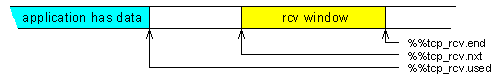
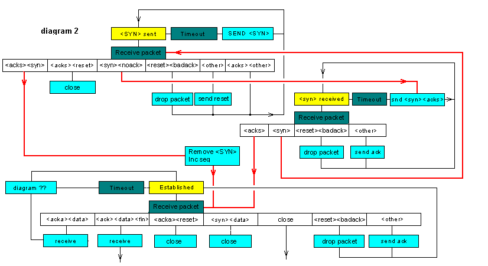

A user opens a tcp_client or tcp_server to use the tcp protocol.
io_protocol_common class
Tcp timer values in ticks ( 10 msec increments)
#50 CONSTANT #rexmt_default_value
#5 CONSTANT #tcp_ack_delay
#1sec #120 * CONSTANT #time_wait_delay
These we set to whatever we like. This system does not allocate buffers of this size. These determine what we advertize, and how much data we will queue. The data is left in peps until it is presented to the task consuming it. The I/O routines or the task sending the data converts it to peps before we see it. When we send data we copy a pep and send it on it's way. We do not repackage data if other end partly receives a pep. If your communicating with systems that have very small data buffers this will effect performance. This TCP stack is written for embedded systems. Technology being what it is today has made TCP a viable option. In my view it is more important to get good performance in systems with large buffer space. Things have been done to minimise computation and data movement.
8000 CONSTANT #rcv_data_buffer
8000 CONSTANT #snd_data_buffer
If we don't get a reponce after this many tries, abort the connection
#8 CONSTANT #abort_retries
Tf the timeout gets above 20 seconds it really is pretty much a waste of time. If this TCP stack ends up on a Mars probe yes it is too short. Chances of that happening, zero.
#100 #20 * CONSTANT #max_timeout
Rfc879 page 5, and see RFC 1122 section 4.2.2.6. This is the internets default tcp data size. To get the default tcp datagram size you have to add the tcp header size and ip header size.
#536 CONSTANT #default_mss
The inital sequence number is to be based on a clock that increments every 4 microsecs. There are 10000 microsecs to a tick. so there are
#10000 4 / CONSTANT _#tcp_ticks>ticks
The number of packets that can be placed in each of the tranmit queues.
$30 CONSTANT _#transmit_queue_size
The lists are implemented as single list queues.
1 CONSTANT _#transmit_queue_priorities
The server can create clients the clients thus created are link into here.
double% instance_variable %%server_link
We need to talk about this a bit. When we receive a datagram from the remote machine we do not generate a direct reply. This is not an ack nack protocol. When we receive we update the data areas to reflect what has been recieved, and schedule a transmit. If something else has scheduled a transmit earlier then so be it. The tranmit routine will create a packet based on the current receive state.
This links together objects that the transmit task must look at. Exch open tcp link is represented by an object. If an object ins't linked into this list there is no transmit scheduled. The list is maintained in timeout order. The transmit task only deal with the list until it finds objects that havn't timed out.
double% instance_variable %%transmit_link
When this object wants the transmits to occure.
cell% instance_variable %%transmit_time
Set to true if object is in transmit_list
cell% instance_variable %%transmit_in_list
%%local_machine and %%remote_machine are defined in io_protocol_common.
cell% instance_variable %%remote_port
cell% instance_variable %%local_port
The address of the table created when this io object was added to the demux routine. We don't own it, but we need it's address for the close.
cell% instance_variable %%demux_structure
If you get a count here ther is an error in this code.
cell% instance_variable %%tcp_state_error
cell% instance_variable %%read_error
How long before we retransmit in ticks
cell% instance_variable %%tcp_rexmt
cell% instance_variable %%tcp_rtt
cell% instance_variable %%tcp_rtt_smooth
cell% instance_variable %%tcp_rtt_dev
The tcb state; see rfc 793.
cell% instance_variable %%tcp_state
Packets unsent don't have to be dealt with when looking to see if packets have been acked. And unsent packets don't have to be timed out.
If things go as planned the :write_protocol word places the pep into the unsent list. The transmit task takes it out of the unsent list, sends it and places it in the sent list. The proto task accpets incoming datagrams. The incoming datagrams ack data sent. The ack operation results in packets in the sent list being taken out and returned to the free buffer pool.
The other end advertises a maximum window size. This is nice, but only places a liumit on what is inflight.
We limit the number of peps that can be queued for transmission. This is done to protect ourselves from excessive data generation.
#queue_list_length
_#transmit_queue_priorities *
#queue_data_length + bytes% instance_variable %%tcp_queue_unsent
#queue_list_length
_#transmit_queue_priorities *
#queue_data_length + bytes% instance_variable %%tcp_queue_sent
Received peps are linked in here in sequence number order. If the data is received multiple times it will be queued here multiple times.
cell% instance_variable %%receive_list
The variable is descremented as data added to list incremented as data is removed. When it decrements to zero the buffer is about full. Packets that contain the current rcv.nxt sequence number can also be added.
cell% instance_variable %%receive_list_room
The seqence number of incoming datagram effects these areas.
When sending a datagram we use these ares to supply the window and ack value. The ack value reflects the current value of rcv.nxt
Segence numbers below the value stored here have been read by the application are are no longer the problem of the TCP sub system.
cell% instance_variable %%tcp_rcv.used
Next seqence to be received. Sequence numbers equal or greater than this have not been received. Sequence numbers less have been received. The syn segment received from the remote machine sets the initial value.
Remember the syn flag occupies one byte of the segment space, as does the fin flag.
cell% instance_variable %%tcp_rcv.nxt
This is the end we are allowed to advertise up to. There should be a "we have advertised up to variable" as well. As the "can advertise" and "have advertise" occure at different times. Some of the data sent by the other end has to be within the advertised window to be accepted. We use the value contained in this variable, very little is gained by being pedantic. We will accept data past the window as long as the datagram contains some data within the window.
cell% instance_variable %%tcp_rcv.end
cell% instance_variable %%tcp_rcv.iss
Initial send sequence; set on open.
cell% instance_variable %%tcp_snd.is
The highest value ack I have received from other end. Remember this is equal to data seen by other end plus one. Or to put it another way, the sequence number of the packet seen by the other end plus the amount of data contained in the packet.
cell% instance_variable %%tcp_snd.una
The highest sequence I have sent.plus one, or the first unsent sequence depending on you point of view. Data with sequence numbers less than this will be on the sent queue, data with sequence numbers higher or equal will be on the unsent queue. I get a bit upset if other ends start acking unsent data.
cell% instance_variable %%tcp_snd.nxt
The ack and window received in the incoming packet has a big effect on these. The last sequence plus one that we may send. This is equal to the ack + ack_window received in the incoming data.
cell% instance_variable %%tcp_snd.end
The seqence used to queue data
cell% instance_variable %%tcp_snd.queue
Congestion window. The end.seq is set by the remote end. Each packet contains a window and this along with the ack value is used to set seq.end
The congestion window is controlled by us. If packets sent arn't acked we conclude the losses were caused by congestion and reduce the congestion window.
cell% instance_variable %%tcp_snd.congestion.wnd
%%tcp_snd_mss is set to default in construct, and if not told otherwise it is limited to the tcp defualt. %%tcp_snd_mss can be updated by an option in the tcp header received form other end.
cell% instance_variable %%tcp_snd.mss
The receive segment size is sent by us as an option in the syn message We determine the rcv.mss on object create. It is not altered thereafter. If we are sending to something behind a gateway we set it to a value equal to the tcp default. If we are talking to something on the same network segment we set a value based on the interfaceces maximum transfer unit
cell% instance_variable %%tcp_rcv.mss
A variable set in the proto task and reset in the transmit task. The proto task sets the variable if an ack is required. The transmit task resets it when a ack has been sent.
cell% instance_variable %%tcp_send_ack
If the task consuming the TCP data wants data and none is available this variable will be set.
cell% instance_variable %%receiving_task
An address of a string desribing why the link aborted is stored here
cell% instance_variable %%tcp_abort_reason
When communication is started the inital seqence number has to be dependent on a clock.
: initial_sequence ( -- num )
@ticks _#tcp_ticks>ticks *
_wreg_TCN1 W@ _#tcp_ticks>ticks _#trr1_value */ +
;
m: ( parent --)
this [parent] :construct
zero %%remote_port !
zero %%local_port !
zero %%demux_structure !
zero %%tcp_state_error !
\ the timeout variables; we pretend we have had very
\ stable transmission at the set timeout.
#rexmt_default_value %%tcp_rexmt !
#rexmt_default_value %%tcp_rtt !
#rexmt_default_value %%tcp_rtt_smooth !
zero %%tcp_rtt_dev !
#tcps_closed %%tcp_state !
\ it transmit queues
_#transmit_queue_size
_#transmit_queue_priorities
%%tcp_queue_sent queue_init
_#transmit_queue_size
_#transmit_queue_priorities
%%tcp_queue_unsent queue_init
\ %%transmit_link doesn't have to be initialised
\ %%transmit_time doesn't have to be initalised
FALSE %%transmit_in_list !
zero %%receive_list !
#rcv_data_buffer %%receive_list_room !
\ when we receive the remote syn this will be set
\ to valid value
zero %%tcp_rcv.nxt !
zero %%tcp_rcv.used !
#rcv_data_buffer %%tcp_rcv.end !
\ %%tcp_snd.end doesn't have to be initialised
initial_sequence DUP %%tcp_snd.is !
\ the sync has not been acknowledged.
DUP %%tcp_snd.una !
\ skip the SYN value, it will get sent because of the state.
1+
DUP %%tcp_snd.nxt !
DUP %%tcp_snd.queue !
\ we have received no reply, the window needs to be large enough
\ to send the syn and that is it
%%tcp_snd.end !
\ we start up assumeing link congestion
#default_mss %%tcp_snd.congestion.wnd !
\ hopefully the incoming syn value will contain an option that
\ will set this.
#default_mss %%tcp_snd.mss !
#default_mss %%type_buffer_size !
\ we set this and tell other end about it when we send the SYN
#default_mss %%tcp_rcv.mss !
\ don't need to stack with an ack
FALSE %%tcp_send_ack !
\ no task is waiting for recevied data
zero %%receiving_task !
zero %%tcp_abort_reason !
; overrides :construct
The transmit list is a linked list of io objects. They are linked in timeout order.
The receive routine doesn't even try and guess what the transmit routine should send. The receive routine ( which is a proto object executed by the ptroto task) updates the data area and schedules transmit events. The transmit routines determine what is to be sent.
The client task ( the task using the TCP object queues paskets for transmission by the tranmission task, and schedules the tranmission task.
tcp opjects that want the tranmission task to look at them link themseleves into the follwoing list.
ram_variable %tcp_transmit_head
tcp_transmit can only be used within methods. The transmit task is executed every time the tcp level is run, so it has to be pretty efficiant. The list is kept in time sorted order. If the first item has timed out it is removed from the list and the :transmit_action method is executed. :tranmit_action may place the object back in the list. When the :trasmit method is finished the transmit task looks at the list again and sees if the top entry has timed out.
The tcp_transmit_task is ran before the routing task so messages can be on the wire after one pass through the tcp level.
tcp_transmit takes a time. If you set time to xclock+ @ the tcp level will be scheduled directly, and the entry will timeout, this is used for data transmits. If you set time to xclock+ @ 1+ a reschedule will not occure, but the entry will timeout on the next clock interrupt. Ack should be rescheduled in this way. In fact it is probable better to add 5, we allow a pretty big window, and allow 50 msec before a ack is sent. This gives things time to consume data allowing the sending of a ack that better reflect the current window size.
5 is picked as follows
10 Mbits approximatly 1 Mbyte. 1/20 sec = 50k bytes, this will fit in a 64k window. To be working at this speed we are talking on the local net. So responce will be seen almost directly.
On a slow link the delay means very little.
Objects can be added to the transmit list at any level.
Word executed to schedule a transmit event.
: tcp_transmit ( time --)
_lock_word
BEGIN
%%transmit_in_list @ IF
\ if greater
DUP %%transmit_time @ - 0> IF
\ new time is greater than old; transmit is scheduled
\ sooner than new request so drop this one. If you delay acks
\ by 5, first ack will get scheduled, the rest ( until the ack is
\ sent) will pass through here.
DROP
_unlock_word
EXIT
THEN
\ this will unlock. We have to unlink as the
\ list has to be linked in timeout order and we are
\ about to change the timeout value.
FALSE %%transmit_in_list !
%%transmit_link unlink_double
\ There is a risk that a higher priority task will
\ link in after we unlink and before we get the
\ lock back on, if this happens we just have to
\ go around again.
_lock_word
THEN
%%transmit_in_list @ not
UNTIL
\ time(--
\ The lock should be on here
\ with the object not linked into the transmit list
DUP %%transmit_time !
TRUE %%transmit_in_list !
%tcp_transmit_head
BEGIN
\ time link(--
DUP @
\ time link link_next(--
WHILE
\ time link(--
2DUP
\ time link time link(--
@ [ %%transmit_time %%transmit_link - ]T LITERAL + @
\ time link time_new time_old(--
- 0< IF
\ next entry is furthur in time so link one back
\ this word will unlock
%%transmit_link SWAP link_double
\ time(--
xclock- @ + 0< IF
\ work is to be done now. This word causes a trap. If we are on
\ the lowest level the priority will now be raised and tcp
\ trasmit and route will do there thing. If we are running
\ at a high priority this will do no more than schedule the
\ tcp level for a run when priorities fall.
run_tcp
THEN
EXIT
THEN
@ \ next entry
REPEAT
\ time link(--
\ come to end of list
%%transmit_link SWAP link_double
xclock- @ + 0< IF
run_tcp
THEN
;
: _setup_tcp_packet { ( seq rcv.wnd rcv.nxt ) variable %flags variable %pep -- }
%%local_machine @ %%remote_machine @
zero ( ip_option_length) %pep @
\ seq rcv.wnd rcv.nxt source destination ip_option_count pep(--
setup_ip
\ the priority and tos is set to zero. This determines
\ how %%priority is used. It contains the data encoded as required
\ for a direct store into the tcp packet.
%%priority @ %pep @ [ ep_data ip_tos + ]T LITERAL + B!
\ seq rcv.wnd rcv.nxt(--
\ set tcp protocol
IPT_TCP %pep @ [ ep_data ip_proto + ]T LITERAL + B!
#tcp_header_end %pep @ add_to_ip
%pep @ ep_ipdata + @
\ snd.una rcv.wnd rcv.nxt ip_data(--
%%local_port @ OVER #tcp_src + W!
%%remote_port @ OVER #tcp_dst + W!
SWAP OVER #tcp_ack + !
\ seq rcv.wnd ip_data(--
SWAP OVER #tcp_window + W!
\ seq ip_data(--
SWAP OVER #tcp_seq + !
\ ip_data(--
[ #tcp_header_end 2 RSHIFT ( to 32 bit words)
4 LSHIFT ( top 4 bits ) ]T LITERAL
OVER #tcp_offset + B!
\ ip_data(--
%flags @ OVER #tcp_flags + B!
\ ip_data(--
zero OVER #tcp_urgptr + W!
\ ip_data(--
DUP #tcp_header_end + %pep @ ep_protodata + !
zero %pep @ ep_protocount + !
\ the protocol object for checksum latter in the datgrams life.
_%tcp_object @ %pep @ ep_proto_obj + !
\ ipdata(--
DROP
;
We call this if we want to add the mss to a packet. it is usable with a pep that contains data. The pep has to be long enough to allow us to insert the 4 bytes. If data is present we do have to move it to insert the option. In this implementaton we only send the mss in the syn segment and we do not send data in the syn segment.
: _set_tcp_option { variable %pep -- }{
2 CONSTANT #mss_option_code
\ describe the mss option
0
DUP CONSTANT _#code 1+
DUP CONSTANT _#len 1+
DUP CONSTANT _#data 2+
DUP CONSTANT _#opt_length DROP
#tcp_header_end 4 + 2 RSHIFT ( to 32 bit words)
4 LSHIFT ( top 4 bits ) CONSTANT _#header_length
}
\ add_to_ip does not alter the protocol counts and nor should it,
\ there are a lot of reasons for adding to the datagram that have
\ nothing to do with the protocol
_#opt_length %pep @ add_to_ip
%pep @ ep_protodata + @ DUP _#opt_length + %pep @ ep_protocount + @ MOVE
\ protodata(--
_#opt_length %pep @ ep_protodata + +!
%pep @ ep_ipdata + @
\ ipdata(--
_#header_length OVER #tcp_offset + B!
\ write the option data
#mss_option_code OVER #tcp_header_end + _#code + B!
_#opt_length OVER #tcp_header_end + _#len + B!
%%tcp_rcv.mss @ SWAP #tcp_header_end + _#data + W!
;
We create the pep and queue it as an ip.
: _send_empty_segment { ( seq rcv.wnd rcv.nxt ) variable %flags -- }{
variable %pep
\ describe the mss option
0
DUP CONSTANT _#code 1+
DUP CONSTANT _#len 1+
DUP CONSTANT _#data 2+
DUP CONSTANT _#opt_length DROP
}
zero %flags @ #tcpf_syn AND IF
\ if a syn packet we have to leave room for an option.
_#opt_length +
THEN
[ ep_data ip_options #tcp_header_end + + ]T LITERAL +
['] get_free_buffer CATCH IF
\ snd.nxt rcv.wnd rcv.nxt length(--
2DROP 2DROP
EXIT
THEN
%pep !
\ snd.nxt rcv.wnd rcv.nxt(--
%flags @ %pep @ _setup_tcp_packet
%flags @ #tcpf_syn AND IF
%pep @ _set_tcp_option
THEN
%pep @ queue_ip
;
: _send_an_ack ( --)
%%tcp_snd.nxt @ \ next seq to send
%%tcp_rcv.end @ %%tcp_rcv.nxt @ -
\ We will accept past end and it can happen
\ if the sending stack sends the complete segment on spec.
zero MAX
%%tcp_rcv.nxt @ \ the highest consistant sequence I have received.
#tcpf_ack _send_empty_segment
;
\ receiving task will be asleep if waiting for data
: _wake_receiving_task ( --)
_lock_word
%%receiving_task @ IF
wake %%receiving_task @ W!
zero %%receiving_task !
THEN
_unlock_word
;
: _return_transmit_queues ( --)
BEGIN
%%tcp_queue_sent dequeue ?DUP
WHILE
kill_free_buffer
REPEAT
BEGIN
%%tcp_queue_unsent dequeue ?DUP
WHILE
kill_free_buffer
REPEAT
;
: _return_receive_list ( --)
BEGIN
_lock_word
%%receive_list @ ?DUP
WHILE
\ this will unlock
DUP unlink_double
kill_free_buffer
REPEAT
_unlock_word
;
The time wait state is looked after by tcp_demux. This word sets things up
: _setup_time_wait ( time --)
\ amount of time we are to stay in the timewait state
%%demux_structure @ _#demux_live_time + !
\ the time we entered the state
xclock+ @ %%demux_structure @ _#demux_time + !
\ we are in this state if the object is zero
0 %%demux_structure @ _#demux_object + !
;
If you close without doing a flush file; the file will be flushed and the fin flag will get set as part of last packet. It is done this way so short transactions can be done in 5 packets, with the client left in the time wait state.
SYN client SYN ACK server ACK DATA FIN cleint ACK DATA FIN server ACK client
: _send_fin_packet ( --)
%%type_buffer> @ IF
\ still data to be sent
%%type_buffer> @
[ #tcp_header_end ]T LITERAL -
\ tcp_header(--
#tcp_flags + DUP B@ #tcpf_fin OR SWAP B!
this :flush_file
ELSE
\ queue a fin packet.
[ ep_data ip_options #tcp_header_end + + ]T LITERAL get_free_buffer
DUP this :setup_protocol
\ addr(--
DUP ep_ipdata + @ #tcp_flags + DUP B@ #tcpf_fin OR SWAP B!
\ addr(--
0 0 ROT this :write_protocol
THEN
;
m: ( --)
\ there is a timer routine to delete TCP demux
\ entries. We have to have this because the deletion
\ of the entry has to be delayed if we send the fin first.
\ If demux structure is set to zero we are closing bacause
\ of an abort in Sopen
%%demux_structure @ IF
zero \ time to leave the finwait state open
%%tcp_state @ DUP #tcps_established =
SWAP #tcps_synrcvd = OR IF
\ shutdown requires
\ a little chat with other end.
xsleep
@u activation_status %%receiving_task !
#tcps_finwait1 %%tcp_state !
_send_fin_packet
xnext
\ we should now be in the time_wait state
#time_wait_delay +
THEN
%%tcp_state @ #tcps_closewait = IF
xsleep
@u activation_status %%receiving_task !
\ other end has sent a fin
\ we must now send our fin and wait for ack
#tcps_lastack %%tcp_state !
_send_fin_packet
xnext
THEN
\ if we wake here we have received the ack
\ we can close directly
\ The time value is how long the demux entry should
\ servive
\ time(--
\ we should be in either #tcps_time_wait, #tcps_closed, or listen
\ but we are not going to look
\ time(--
\ if we get here the close has finished from out point of view
_setup_time_wait
\ now no more packets will arrive from net
\ now get us out of the transmit list
_lock_word
%%transmit_in_list @ IF
%%transmit_link unlink_double
THEN
_unlock_word
\ now no more packets will be sent to the net.
_return_transmit_queues
_return_receive_list
THEN
this [parent] :destruct
; overrides :destruct
String can be:
/destination_machine/destination_port //destination_port or nothing
The mode determines the priority and the type of service required.
m: ( addr n mode -- instance )
DUP %%mode !
\ the mode contains the priority and mode as required
\ for tcp header
%%priority !
\ /machine/port
[CHAR] / remove_leading
[CHAR] / left_split
\ addr_machine count_machine addr_port count_port(--
2SWAP DUP IF \ machine specified
Sresolve_address %%remote_machine !
ELSE
2DROP
THEN
\ addr_port count_port(--
[CHAR] / remove_leading
DUP IF \ port speced
Snumber %%remote_port !
ELSE
2DROP
THEN
\ ask the os for a demux entry, this also provides a local port
\ as soon as we do this we can start receiving
\ datagrams destined to the allocated port.
\ As no one knows about us it is not likely, but it
\ is possible.
\ This adds to the udp demux table.
\ We are a client, we care about detination machine and port
this
%%remote_machine @ -1
%%remote_port @ -1
_tcp_port %%demux_structure !
%%demux_structure @ _#demux_local_port + @ %%local_port !
\ find out if remote machine on local net;
%%remote_machine @
%%priority $1C AND 2 RSHIFT
route_get ?DUP IF
\ the standard calls for this; not really needed but
\ what the heck
DUP rt_interface + @ :ip @ %%local_machine !
\ The rules are. Make the receive mss as big as you can
\ and tell the other end when you send the sync. The send
\ mss is the default value unless the other end tells us
\ otherwise. The mss depend not only on the connection medium
\ but alsp on the host being communicated with. The other end
\ may not be able to handle a mss greater than the min.
DUP rt_gw + @ not IF
\ we are talking locally; make mss dependent
\ on mtu. This is very important for us as the
\ rti bus has a mtu of 8k
\ see rfc879 page 5 for justification for this calculation
DUP rt_interface + @ :@mtu ip_options -
#tcp_header_end - %%tcp_rcv.mss !
THEN
DROP
THEN
#tcps_synsend %%tcp_state !
\ This adds the object to the transmit list. After this
\ things are started
\ the TCP/IP system is trying to get the SYN packet out, and will deal with
\ the ack received.
xclock+ @ tcp_transmit
this
; overrides :Sopen
Back when the file objects were being written the object :construct word was was split from specific action need to open the file, and Sopen was born. Well this came in handy. When a server creates a client it is just creating one of these objects. We need a word to do the action Sopen does based on data received. :client_init is the word.
The SYN buffers contain a head structured as shown below
zero
DUP CONSTANT _#lhead_link_fwd 4+
DUP CONSTANT _#lhead_linh_back 4+
DUP CONSTANT _#lhead_entries_added 4+
DUP CONSTANT _#lhead_data
DROP
Each syn received creates an entry as described below. The timeout routine deletes entryies.
zero
DUP CONSTANT _#listen_inuse 2+
DUP CONSTANT _#listen_port 2+
DUP CONSTANT _#listen_mss 2+
\ service type
DUP CONSTANT _#listen_st 2+
DUP CONSTANT _#listen_machine 4+
DUP CONSTANT _#listen_time 4+
\ sequence that came in packet
DUP CONSTANT _#listen_rcv.iss 4+
\ sequence that we sent
DUP CONSTANT _#listen_send.iss 4+
CONSTANT _#listen_entry_size
addr points to a table contructed as above the pep points to the datagram that can move the client to the established state. We do the movement using the standard receive words because the pep can contain data and a fin flag as well as a syn and a ack of our syn and it is all to complicated to write again.
ram_variable %tcp_server_error
CREATE _$bad_open_packet ," Bad open packet"
m: { variable %pep variable %syn_table ( -- ) }
%syn_table @ _#listen_machine + @ %%remote_machine !
%syn_table @ _#listen_port + W@ %%remote_port !
%pep @ [ ep_data ip_dst + ]T LITERAL + @ %%local_machine !
%pep @ ep_ipdata + @ #tcp_dst + W@ %%local_port !
%syn_table @ _#listen_mss + W@ %%tcp_rcv.mss !
\ I received the syn, I expect to see the seqence after the syn
%syn_table @ _#listen_rcv.iss + @
DUP %%tcp_rcv.iss !
DUP %%tcp_rcv.used !
1+
DUP %%tcp_rcv.nxt !
#rcv_data_buffer + %%tcp_rcv.end !
\ I have sent the SYN
%syn_table @ _#listen_send.iss + @
DUP %%tcp_snd.is !
DUP %%tcp_snd.una !
DUP %pep @ ep_ipdata + @ #tcp_window + W@ + %%tcp_snd.end !
1+
DUP %%tcp_snd.nxt !
%%tcp_snd.queue !
\ Set link to priority and tos requested by client.
%pep @ [ ep_data ip_tos + ]T LITERAL + B@ %%priority !
\ set the %%local_machine, it is dependent on the
\ address received in the syn datagram, not the
\ interface the reply is sent.
\ set up the demux entry
\ we care about all values
this %%local_port @
%%remote_machine @ -1 %%remote_port @ -1
_tcp_add IF
\ we are in deep shit we can't use the client and we can't close it
\ The routine that gets the client_object will have to check that this
\ is non zero. If zero it will have to close it directly.
zero %%demux_structure !
%pep @ kill_free_buffer
EXIT
THEN
%%demux_structure !
#tcps_synrcvd %%tcp_state !
\ so the packet gets used twice, the server object
\ deals with the packet and creates a client object
\ the client object is put into the state in which
\ this packet is expected and it uses the packet again.
\ If you look at the client code it can deal with stange
\ combinations of ack data and fin,
%pep @ this :consume_port
%%tcp_state @ #tcps_synrcvd @ > not IF
\ if the state is not above #tcps_synrcvd then
\ we have to close the link down again.
\ This should not happen!
1 %tcp_server_error +!
_$bad_open_packet this :abort_connection
THEN
\ well that is it folks.
; overrides :client_init
: _add_to_tcp ( n pep -- )
2DUP add_to_ip
ep_protocount + +!
;
\
\
m: { variable %pep -- }
\ don't set the ack bit cause it is not a valid ack unless
\ the ack and window fields are updated
%%tcp_snd.queue @ 0 0 #tcpf_ack %pep @ _setup_tcp_packet
; overrides :setup_protocol
\ not a valid ooption
m: ( %pep_in %pep_out -- )
TRUE ABORT" Not a valid option"
; overrides :setup_protocol_from_pep
The big qestion; should We close on an abort or leave it to the user. The rule is if you take one of these words you can convert it into a ior type result with a simple catch. That means you don't close
While TCP presents itself to the application as a byte stream, at the low level this sytems deals in peps. :read_protocol fetches the next pep. This word deals with overlapping data, and removes urgent data from the input stream.
: _new_data? { ( pep -- addr count true | false ) }{
variable %urgent_pointer }
\ adjust datagram so urgent data is skipped
DUP ep_ipdata + @ #tcp_urgptr + W@
OVER ep_protocount + @ MIN
\ pep urgent(--
2DUP SWAP ep_protodata + +!
2DUP NEGATE SWAP ep_protocount + +!
OVER ep_start_seq + +!
%%tcp_rcv.used @
OVER ep_end_seq + @
- 0< IF
\ pep (--
\ move past data in packet already seen
%%tcp_rcv.used @ 1+ OVER ep_start_seq + @ -
\ if urgent data is skipped result will be negative.
\ if result is negetive nothing has to be altered.
zero MAX
\ pep num_used(--
SWAP 2DUP ep_protodata + @ +
\ num_used pep addr(--
-rot
ep_protocount + @ SWAP -
DUP IF
TRUE
EXIT
ELSE
2DROP
FALSE
THEN
THEN
\ pep(--
DROP
FALSE
;
\ can't receive data in listen state
\ can't receive after you have closed
\ you can still receive after other end has received
\ fin as received data has to be taken out of queue
\ So there us not many states left.
: _bad_receive_state? ( -- flag )
\ deal with common case as directly as possible
%%tcp_state @ #tcps_established = IF
FALSE
EXIT
THEN
%%tcp_state @ DUP #tcps_synsend = IF
DROP FALSE
EXIT
THEN
DUP #tcps_synrcvd = IF
DROP FALSE
EXIT
THEN
#tcps_closewait = IF
FALSE
EXIT
THEN
TRUE
;
: _update_rcv_window ( --)
_lock_word
%%tcp_rcv.nxt @ %%receive_list_room @ + DUP
%%tcp_rcv.end @ %%tcp_rcv.mss @ +
- 0> IF
%%tcp_rcv.end !
ELSE
DROP
THEN
_unlock_word
;
m: { ( --pep addr n ) }{
variable %pep
}
\ set up for the xnext
BEGIN
%%timeout @ IF
xtest
ELSE
xsleep
THEN
\ the order you do this sort of thing is important.
\ you have to set yourself up for activation
\ before you see if the other task has done something.
@u activation_status %%receiving_task !
\ check to see if we are in a valid state.
%%tcp_state @ #tcps_abort = IF
0 %%receiving_task !
%%tcp_abort_reason @ $ABORT
THEN
_bad_receive_state? IF
0 %%receiving_task !
0 0 0
EXIT
THEN
%%receive_list @ IF
_lock_word
%%receive_list @
DUP unlink_double
_unlock_word
\ pep(--
\ we have to do this first as system queues peps
\ that have nothing more than a ep_error value
DUP ep_error + @ IF
\ ICMP messages are not seen here
DUP ep_error + @
SWAP kill_free_buffer
zero %%receiving_task !
$ABORT
THEN
\ we have to increase %%receving_list_room, if the available
\ room is now bigger than mss we send an ack to tell the other end
\ the window is now open, a winder advertisment.
%%receive_list_room @ %%tcp_rcv.mss @ < IF
_lock_word
DUP ep_protocount + @ %%receive_list_room +!
_unlock_word
_update_rcv_window
%%receive_list_room @ %%tcp_rcv.mss @ < not IF
\ should we send ack directly or should we queue.
\ If we queue............
\ If data is being sent in the
\ other direction then this will only alter the time.
\ If the link is quite then it is an additional overhead.
\ TRUE %%tcp_send_ack !
\ xclock+ @ tcp_transmit
\ If we ack directly.............
\ The software load is less. If data is being sent then it
\ is an extra packet. I don't know, neither is the better choice.
_send_an_ack
THEN
ELSE
_lock_word
DUP ep_protocount + @ %%receive_list_room +!
_unlock_word
_update_rcv_window
THEN
\ pep(--
DUP _new_data?
\ pep addr num true|pep false(--
IF
\ we have new data
jump ep_end_seq + @ %%tcp_rcv.used !
zero %%receiving_task !
EXIT
THEN
\ buffer added nothing new
\ try again
\ This is where we deal with
\ double copies of received data.
kill_free_buffer
THEN
\ If we are in close wait and there is no data
\ in the list then reception has finished
%%tcp_state @ #tcps_closewait = IF
0 %%receiving_task !
0 0 0
EXIT
THEN
\ this sets the timeout time and does a xnext.
\ it the status is set to xsleep setting the
\ timeout time is a null operation
%%timeout @ xwait
xtimeout? IF
0 %%receiving_task !
0 0 0
EXIT
THEN
AGAIN
; overrides :read_protocol
: _read_active ( --)
%%active_pep @ IF
%%active_pep @ kill_free_buffer
THEN
this :read_protocol
%%active_count !
%%active_pointer !
%%active_pep !
;
As we read in data we increase addr and decrease num. Our aim here is speed
: _read_binary_stream ( addr1 num1 -- addr2 num2 flag)
%%active_count @
OVER > IF
\ addr1 num1(--
\ the data request can be satisfied with data over
2DUP %%active_pointer @ SWAP MOVE
\ addr num (--
DUP NEGATE %%active_count +!
DUP %%active_pointer +!
+ zero
\ can be end of stream all the data isn't read from the pep
FALSE
EXIT
THEN
\ move what we have in pep
\ if the fin flag is set well
\ this is just all you are going to get
\ addr1 count(--
%%active_pointer @ jump %%active_count @ MOVE
%%active_count @ -
\ addr1 stil_to_get(--
SWAP %%active_count @ + SWAP
\ addr2 still_to_get(--
%%active_pep @
\ addr still_to_get pep(--
zero %%active_pep !
zero %%active_count !
DUP ep_ipdata + @ #tcp_flags + B@ #tcpf_fin AND IF
TRUE
ELSE
FALSE
THEN
SWAP kill_free_buffer
;
: _read_tcp { ( addr len -- len) }{
variable %len }
DUP %len !
BEGIN
\ go in circles until
\ we have requested data
\ or until closed by other end
\ remember read assumes no data structure
\ we will return with the count
\ unless channel is closed in which case
\ we return with less than count
%%active_count @ not IF
_read_active
%%active_pep @ not IF
\ timeout was set, and we timed out
NIP
%len @ SWAP -
EXIT
THEN
THEN
\ addr len(--
_read_binary_stream
\ addr len flag(--
\ if flag is true stream is finished
IF
NIP
%len @ SWAP -
EXIT
THEN
\ else num should be zero
DUP not IF
2DROP %len @
EXIT
THEN
AGAIN
;
m: ( addr len -- len)
_read_tcp
; overrides :read
: eot? ( char -- flag )
%%eot #$count_length + %%eot $count@ zero DO
\ char addr (--
2DUP char@ = IF
2DROP
TRUE
UNLOOP
EXIT
THEN
1 CHARS +
LOOP \ char addr(--
2DROP
FALSE
;
A termination code has to be stored at the end of the input. Num2 will never equal num1. This differs from ANSI forth, if we followed the standard the user would have to make the buffer 1 ( the standard requires two) characters longer that num1. I think that is absolute nonsence designed to cause programming bugs.
: _get_a_character ( -- char)
%%active_pointer @ char@
1 CHARS %%active_pointer +!
[ 1 CHARS NEGATE ]T LITERAL %%active_count +!
;
: _store_a_char ( addr num char --addr num)
DUP #lf = IF
DROP
EXIT
THEN
jump char!
SWAP
1 CHARS +
SWAP
1 -
;
: _unget_character ( char --)
DROP
1 CHARS %%active_count +!
[ 1 CHARS NEGATE ]T LITERAL %%active_pointer +!
;
1) slow as a wet wig as each character has to be looked at. 2) Assumptions are made on character set and size.
And lets be honest about this, these have to be the same as the assumtions made by unix if you are going to get involved in the internet.
1) slow as a wet wig as each character has to be looked at. 2) Assumptions are made on character set and size. 3) telnet assumptions made
Flag is true if the data stream is finished.
: _get_data ( -- term true | char false)
%%active_count @ not IF
\ look at the fin flag for the last pep.
%%active_pep @ IF
\ addr pep(--
%%active_pep @ ep_ipdata + @ #tcp_flags + B@ #tcpf_fin AND IF
\ addr pep(--
%%active_pep @ kill_free_buffer
0 %%active_pep !
\ addr(--
#end_eof TRUE
EXIT
THEN
THEN
\ have to get more data into buffer
_read_active
%%active_pep @ not IF
\ if we returned without a pep we are finished
#end_eof TRUE
EXIT
THEN
THEN
_get_a_character
FALSE
;
: _read_terminal_stream { ( addr1 num1 -- addr2 num2 ) }{
}
BEGIN
\ addr1 num(--
\ if the count is one of the termination count
\ we cannot use it, we have to leave room for the
\ terminator that indicates we ran out of room.
\ addr num(--
_get_data IF
\ a terminator
_store_a_char
EXIT
THEN
\ addr num char(--
DUP eot? IF
\ addr num char(--
_store_a_char
\ addr num (--
EXIT
THEN
\ leave room for terminator
OVER 2 < IF
_unget_character
\ addr num (--
#end_count _store_a_char
EXIT
THEN
\ addr num char(--
_store_a_char
AGAIN
;
m: { ( addr len -- len flag) }{
variable %len
variable %addr }
\ zero is a problem as we need room to store the terminator
DUP not IF
2DROP zero TRUE
THEN
DUP %len !
OVER %addr !
\ addr len(--
_read_terminal_stream
\ addr1 len1(--
NIP %addr @ SWAP
\ addr len1(--
%len @ SWAP -
\ addr len3(--
this :termination>code
\ len4 flag(--
; overrides :read_line
m: ( addr num --num flag)
1- TUCK + char@
#end_eof = IF
FALSE
ELSE
TRUE
THEN
; overrides :termination>code
Write the data pointed to by addr and n to the pep and queue. Queued data is only sent from four states.
SYN-SENT SYN-RECEIVED ESTABLISHED and CLOSE-WAIT
If you queue in other states the queue will become full and you will sleep forever. It is probable best to abort if we are not in a valid state.
: _bad_send_state? ( --flag)
\ most common
%%tcp_state @ #tcps_established = IF
FALSE EXIT
THEN
\ occures if other end has closed and
\ is waiting for us to stop yaddering
%%tcp_state @
DUP #tcps_closewait = IF
DROP FALSE EXIT
THEN
\ getting in a bit fast. Opening hasn't finished.
\ However queueing data is acceptable.
DUP #tcps_synsend = IF
DROP FALSE EXIT
THEN
DUP #tcps_synrcvd = IF
DROP FALSE EXIT
THEN
\ so we can send the fin
DUP #tcps_finwait1 = IF
DROP FALSE EXIT
THEN
\ se we can send the fin
#tcps_lastack = IF
FALSE EXIT
THEN
TRUE
;
Write the data into the pep and queue the pep for transmisison. It is assumed that the pep has been properly set up.
m: { ( addr n) variable %pep ( --) }
_bad_send_state? ABORT" Can't transmit data with link in this state"
\ add_to_ip can deal with zero.
\ add n (--
DUP %pep @ _add_to_tcp
\ MOVE can deal with a zero count
\ and common destination and source address
%pep @ ep_ipdata + @ #tcp_header_end + SWAP MOVE
\ we now have to get the end sequence from the pep
\ as the fin flag may be set.
%pep @ _end_sequence 1+
\ seq(--
%pep @ %%tcp_queue_unsent zero
\ address queue_head prority(--
\ this gets the data onto the queue.
enqueue_wait
\ seq (--
%%tcp_snd.queue !
\ We need to transmit directly
\ even if there is already data in the trasmit queue we may be able
\ to send the new data directly as there can be more than one packet
\ in flight.
xclock+ @ tcp_transmit
; overrides :write_protocol
Write buffered data to storage if you follow write through you will find our buffer is the pep and there is no need to transfer the data. If you look at the definition of MOVE you will see it is bright enough not to move data that has a common source and destination address.
m: \ compile time ( --xt)
\ runtime ( --)
%%type_buffer> @ ?DUP IF
%%type_buffer_count @ OVER
[ ep_data ip_options #tcp_header_end + + ]T LITERAL -
this :write_protocol
THEN
zero %%type_buffer> !
zero %%type_buffer_count !
; overrides :flush_file
Keep going around until count is zero, each time around we send a little more data.
: _tcp_data>type_buffer ( addr count -- false|addr count true)
%%type_buffer> @ not IF
%%type_buffer_size @
[ ep_data ip_options #tcp_header_end + + ]T LITERAL + get_free_buffer
DUP this :setup_protocol
ep_ipdata + @ #tcp_header_end +
%%type_buffer> !
zero %%type_buffer_count !
THEN
\ addr count(--
%%type_buffer_size @ %%type_buffer_count @ -
\ addr num left(--
2DUP > IF ( will not all fit)
\ addr count amount_to_fit(--
\ make sure we have a type buffer
>R \ addr count (--
OVER %%type_buffer> @ %%type_buffer_count @ + R@ MOVE \ put in as much as we can
\ addr count(--
SWAP R@ + SWAP R@ - \ update send data to reflect what has been sent
\ addr_new count_new(--
R> %%type_buffer_count +!
FALSE \ tell :write to send the packet
\ and come back again
EXIT
THEN
\ data will fit in the buffer
DROP
\ character we are up to since last record ( eol ).
%%type_buffer> @ %%type_buffer_count @ + SWAP \ addr to count(--
\ update %%type_buffer_count after you have done the address calculations
DUP %%type_buffer_count +!
MOVE
TRUE
;
m: ( addr num--)
DUP IF \ There is some data
BEGIN
_tcp_data>type_buffer IF \ return true if all ok
EXIT
THEN
\ sent the data to the device to clear the buffer
this :flush_file
AGAIN
ELSE
2DROP
THEN
; overrides :write
Returns true if data as the application consumes data %%tcp_rcv.used moves forward. If %%tcp_rcv.mext is greater than %%tcp_rcv.used then there is incoming data avialable.
m: ( --flag)
%%tcp_state @ #tcps_abort =
%%tcp_rcv.nxt @ %%tcp_rcv.used @ - 0> OR
; overrides :key?
Urgent data only has a meaning if the tcp client type assigns it a meaning. The following methed is called in the proto task if the urgent bit is set.
The task does not see urgent data. It would seem the urgent data option has been so badly droken that it is not even used for interrupt process. It's obvious use.
m: ( pep --)
DROP
; method :urgent_data
None of the RFC1323 options are handled. However this code must be able to scan across these options and ignore them.
If we return true the pep will go. Only set if the option list is badly structured
: _tcp_fault_option ( option -- byte_after flag)
TRUE
;
: _tcp_unknown_option { ( option -- byte_after flag) }{
zero
DUP CONSTANT _#code 1+
DUP CONSTANT _#len 1+
DUP CONSTANT _#opt_head DROP
}
DUP _#len + B@
\ addr len(--
DUP _#opt_head < IF
\ option count doesn't even cover header
\ we are dealing with rubbish
+ TRUE
EXIT
THEN
+
FALSE
;
The option does nothing other than take up one byte position
: _tcp_align ( addr -- addr flag )
1+ FALSE
;
: _tcp_mss { ( addr -- addr flag ) }{
0
DUP CONSTANT _#code 1+
DUP CONSTANT _#len 1+
DUP CONSTANT _#data 2+
DUP CONSTANT _#opt_length DROP
}
DUP _#len + B@ _#opt_length = IF
\ option is well constructed
DUP _#data + unalignedW@
DUP %%tcp_snd.mss !
\ set the type buffer size to the mss size
%%type_buffer_size !
_#opt_length + FALSE
EXIT
THEN
\ it is not well structured.
\ fail the packet
DUP _#len + B@ + TRUE
;
CREATE _tcp_option_vectors
$04 tw, \ number of entries
' _tcp_fault_option t, \ 0 does not get processed here, just something to put in table
' _tcp_align t, \ 1 align
' _tcp_mss t, \ maximum segment size.
' _tcp_unknown_option t, \ this and higher options are not supported
The option field is a byte.
: _tcp_process_an_option ( addr_opt -- addr_after flag )
DUP B@ _tcp_option_vectors vector
;
Unknown options are simply ignored.
: _process_tcp_options { variable %pep -- ( flag ) }{
variable %options_end
}
\ this is the common route , no options
\ do as little as possible.
%pep @ ep_protodata + @
%pep @ ep_ipdata + @ -
#tcp_header_end = IF
FALSE
EXIT
THEN
\ if we get here we have options
%pep @ ep_protodata + @ %options_end !
%pep @ ep_ipdata + @ #tcp_header_end +
\ option_pointer(--
BEGIN
\ end of option list code is a zero option
DUP B@ not IF
DROP
FALSE
EXIT
THEN
\ list has finished
DUP %options_end @ < not IF
DROP
FALSE
EXIT
THEN
( opt_addr (-- new_option_addr FLAG )
_tcp_process_an_option IF
\ bad bad option
DROP
TRUE
EXIT
THEN
DUP %options_end @ > IF
\ if here structure of option list is rubbish
DROP
TRUE
EXIT
THEN
AGAIN
;
We are talking about the outgoing packets seqence number here. In the beginning the send window is dependent on the ack and window received in incoming datagrams.
SEQ.NXT <= SEG.SEQ+SEG.LEN-1 and SEG.SEQ <= RCV.END
This test will transmit one packet past the end of the window. It has one super dooper big advantage. The zero window code folds into the timeout code. I can't see why it won't work, but there must be some problem as all the implementations I have looked at pretend a zero window is some special thing. We will see.
: _in_send_window { variable %pep ( -- flag ) }{
variable %send_end }
\ number of bytes unsent
\ %%tcp_snd.end is only increased by packet steps.
%%tcp_snd.end @ %%tcp_snd.nxt @ -
zero MAX
%%tcp_snd.congestion.wnd @ MIN
%%tcp_snd.nxt @ + %send_end !
\ the end is not allowed to preceed %%tcp_snd.una
\ but this is a null test as packets that meet this
\ condition are no longer in the transmit list
\ %pep @ ep_end_seq + @ %%tcp_snd.una @ - 0< IF
\ DROP FALSE EXIT
\ THEN
\
\ The start is not allowed to be past %send_end
%pep @ ep_start_seq + @ %send_end @ - 0> IF
FALSE
EXIT
THEN
TRUE
;
The tranmission task only schedules a timeout if there is data to be sent. Remember the task that takes packets from this list is on the same level as us.
: _schedule_timeout ( --)
%%tcp_queue_sent queue_empty? not IF
%%tcp_rexmt @
\ The timeout is dependent on the timeout time
\ of the first packet in queue, if it has been sent.
\ And the first item in the queue should have been sent.
%%tcp_queue_sent get_list #queue_list_head + @
ep_tcp_xclock + @ +
\ but we do not schedule a timeout on this tick, we have
\ to remember the round trip time can be less 1 tick.
DUP xclock+ @ 2 + - 0< IF
DROP
xclock+ @ 2 +
THEN
tcp_transmit
THEN
;
The transmit task doesn't get involved in packaging the data. TCP supports urgent data but the urgent data is part of the tcp sequence. Once you have commited the data to a particular seqence you have to stick with it, otherwise you add complications to the protocol. You have to start asking, can I alter the seqence now. You may be tempted to say, you know the other machine is up to you have a ack to tell you. The reply tells us where the machine was up to when it sent the reply. It could now be well past what we are going to resend. What set of data will the machine use. What we sequenced first or what we are about to resequence. Nope once the data is committed to a send, it's order must remain fixed.
So we have data that has been packaged by smarter routines than us, they have added the urgent data if required. There is a further anvantage in doing it this way. Routines that want speed can put there data into peps and use lower level routines to add the transmit packets onto this list. Thus avoiding a data movement.
If the other end has moved snd.una to a point partway through a packet ( whick is likely if the other end is having buffer problem, we do not modify the packet. It would take time as not only do we have to remove the unneeded data, we ould have to update the urgent pointer. Special conditions tests take time and introduce bugs, best not to do.
The flag field is used to set the tcp headers flag field. If the syn bit is set the option field is included.
flag is true if data sent.
This work out really really well. I like it.
A lot of things just happen.
Data exist in the list from snd.una to whatever has been
queued by the task. If the task is waiting for queue space,
the code that removes the data from the queue will
wake the task when such an action happens. It's up to the
When a packet timesouts and needs tranmission there can be many
inflight. The first non ack doubles the timeout
and retransmits the guilty packet. The window congestion
window is also reduced. However if the limit is the amount
of data available for transmission, this has little effect.
More time has to pass before other packets are trasmitted.
: _clone_datagram { variable %pep ( -- pep2) }{
variable %buffer
}
%pep @ ep_len + @
\ length(--
['] get_free_buffer CATCH IF
\ we can simple pretend it didn't happen
\ and things will sort themseleves out
DROP
zero
EXIT
THEN
%buffer !
\ copy data into transmit pep
\ (--
%pep @ %buffer @ %pep @ ep_len + @ MOVE
\ update ep_ipdata
%pep @ ep_ipdata + @ %pep @ -
%buffer @ + %buffer @ ep_ipdata + !
\ update protodata
%pep @ ep_protodata + @ %pep @ -
%buffer @ + %buffer @ ep_protodata + !
%buffer @
;
: _tcp_send_pep_contents { variable %pep }{
variable %buffer
}
%pep @ _clone_datagram %buffer !
\ updates the ack and window. Note we don't alter the packet.
\ The flags are set when the packet is queued. This means we
\ send the syn without data. But so what
\ we are trying to write a TCP driver that
\ interoperates not push the standard to it's limit.
%buffer @ ep_ipdata + @
%%tcp_rcv.nxt @ OVER #tcp_ack + !
%%tcp_rcv.end @ %%tcp_rcv.nxt @ - SWAP #tcp_window + W!
%buffer @ queue_ip
;
: _tcp_send_contents { variable %pep -- }
\ see comments below
xclock+ @ %pep @ ep_tcp_xclock + !
%%tcp_snd.end @ %%tcp_snd.una @ - 0> not IF
\ we are sending into a zero window.
\ If an ack is required, send only ack, as you
\ cannot piggy back data in this situation and be assured the
\ ack will get accepted. A real protocol suff up I think; but that is
\ the way it is. The problem is the rules on page 26 of RFC793.
\ If no ack is required send the data. It is nothing more than a probe
\ and it may as well be a probe that can move things forward,
\ things can change while the packet is inflight.
\
\ Remember the window open can be lost
\ so you have to probe every now and again.
\ The probe can be the next valid packet. The other end
\ will just drop it if window is still zero. As there is no
\ data to be acked, who cares.
\ I should add that this test brings little to the table. If data
\ is coming in the other direction most of the acks will be acks.
\ This probe, if it always contained data would be nothing more than
\ a lost ack occuring every now and again.
\ This is a valid state, we should not increment
\ ep_tcp_tries. However if we do this we can end up with TCP
\ connections left open forever. It would occure as follows.
\ 1) Remote machines closes window.
\ 2) Remote machine dies.
\ But that is just the way it is.
%%tcp_send_ack @ IF
EXIT
THEN
ELSE
1 %pep @ ep_tcp_tries + +!
THEN
FALSE %%tcp_send_ack !
%pep @ _tcp_send_pep_contents
;
Trace down the sent queue and send timed out packets the trace down has finished when we arrive at untimed out packet. We have a small problem, we can't simple take the packet out of the list and send, we have to clone it. We can not get away from this. TCP requires one data copy. The IP stack as written is based on two principles. 1) we don't care how the packet was generated and 2) if the code cannot deal with the packet it can destoy it. We are only allowed to destoy transmit data if the other end has acked it.
CREATE _$timeout ," To many transmit retries"
: _try_and_send_data ( -- )
%%tcp_queue_sent queue_empty? not IF
%%tcp_queue_sent get_list #queue_list_head +
BEGIN
\ if the entry is zero we don't test time
\ and we finish the loop
@ DUP DUP IF
ep_tcp_xclock + @ xclock- @ +
%%tcp_rexmt @ + 0<
THEN
WHILE
\ list (--
\ if the number of reties is too great we abort the connection
DUP ep_tcp_tries + @ #abort_retries > IF
DROP
\ allow other code to set abort reson in this case
\ The abort reson may come from ICMP messages
%%tcp_abort_reason @ ?DUP not IF
_$timeout
THEN
this :abort_connection
EXIT
THEN
\ pep(--
\ remember the congestion window reduction can take what was in
\ the send window out of the window. We should take note of this.
\ If this occures data should be sent as the congestion
\ can never be reduced below one packet.
DUP _in_send_window not IF
\ there is no need to look at the unsent queue it will definitly be
\ outside the window.
DROP
EXIT
THEN
\ is the packet still in the window. Remember every packet retransmitted
\ reduces the congestion window.
\ pep(--
DUP _tcp_send_contents
\ The standard requires us to reduce the congestion window by
\ half.
\
\ list(--
%%tcp_snd.congestion.wnd @
1 RSHIFT
\ don't reduce below the maximum segment.
%%tcp_snd.mss @ MAX
%%tcp_snd.congestion.wnd !
\ and double the retransmit time
%%tcp_rexmt @ 1 LSHIFT
\ the is a maximum timeout
#max_timeout MIN
%%tcp_rexmt !
REPEAT
DROP
THEN
\ now we have to deal with unsent data
BEGIN
%%tcp_queue_unsent queue_empty? not
WHILE
%%tcp_queue_unsent get_list #queue_list_head + @
DUP _in_send_window not IF
DROP
EXIT
THEN
\ we have to try and queue the data on the sent queue
\ if we fail it has to remain on the unsent.
\ Too much data is inflight
\ pep(--
%%tcp_queue_sent zero enqueue_try IF
\ couldn't queue on the sent queue
\ too many packets inflight.
EXIT
THEN
\ (--
%%tcp_queue_unsent dequeue
\ pep(--
DUP _tcp_send_contents
ep_end_seq + @ 1+ %%tcp_snd.nxt !
REPEAT
;
Look to see if ack can be piggy backed on data. If not send empty ack packet.
: _send_data ( --)
\ if we sent something the ack is in the head
_try_and_send_data
%%tcp_send_ack @ IF
FALSE %%tcp_send_ack !
_send_an_ack
THEN
_schedule_timeout
;
This is only called if datagram is only transmitted once.
: _update_round_trip { ( time -- ) }{
\ values taken from comer volume 1 edition 3
3 CONSTANT #rtt_gain_asr
2 CONSTANT #rtt_dev_asr
3 CONSTANT #dev_gain
}
\ the round trip time is done in 10 msec inc, it can be zero
\ if less than 10 msec, just round up by 1.
1+
DUP %%tcp_rtt @ -
\ time diff(--
DUP #rtt_gain_asr >>a
%%tcp_rtt @ + %%tcp_rtt_smooth !
\ time diff(--
SWAP %%tcp_rtt !
\ diff(--
ABS %%tcp_rtt_dev @ -
#rtt_dev_asr >>a
%%tcp_rtt_dev @ +
%%tcp_rtt_dev !
%%tcp_rtt_smooth @ %%tcp_rtt_dev @ #dev_gain * +
%%tcp_rexmt !
;
Incoming data, link it into receive list.
: _link_tcp_pep { ( head) variable %pep -- ( flag ) }{
variable %in_rcv.nxt
variable %fin_flag }
\ only send an ack if this moves forward.
\ if it doesn't packet is out of order and ack will be wasted.
\ fast recovery requires an ack every time a packet is received
\ out of order. We don't support it.
%%tcp_rcv.nxt @ %in_rcv.nxt !
FALSE %fin_flag !
\ link(--
\ to be linked after this
%pep @ SWAP link_double
\ we don't include the seq and fin flag in the queue room calculations.
\ queue room is only used to protect us from attack
%pep @ ep_protocount + @ NEGATE
_lock_word
%%receive_list_room +!
_unlock_word
\ If here the incoming moves the sequence forward. It may however
\ have been the key packet and we can now move forward multiple packets
\ (--
%%receive_list @
BEGIN
?DUP
WHILE
\ if the beginning of the segment is less or equal to rcv.nxt
\ then the end can become rcv.nxt
DUP ep_start_seq + @
%%tcp_rcv.nxt @
- 0> not IF
DUP ep_end_seq + @ 1+
%%tcp_rcv.nxt @ MAX
%%tcp_rcv.nxt !
%%tcp_rcv.nxt @ %in_rcv.nxt @ <> IF
TRUE %%tcp_send_ack !
xclock+ @ #tcp_ack_delay + tcp_transmit
\ the receiving task now needs to transfer data
\ to it's buffers as required.
_wake_receiving_task
THEN
ELSE
\ well that is the end of this trick there is a hole
DROP
_update_rcv_window
%fin_flag @
EXIT
THEN
\ as we have moved the received window forward we have to look
\ at the fin flag.
\ the packet that is now the last consumed may be the one we want.
DUP ep_ipdata + @ #tcp_flags + B@ #tcpf_fin AND IF
TRUE %fin_flag !
THEN
\ move onto next entry in list
@
REPEAT
_update_rcv_window
%fin_flag @
;
Packet sequence is checked before entering this it is acceptable if in is greater or equal to %tcp_rcv.nxt and within our window range. We only check that the packet seqence is in the window range this means that the amount of data present can be greater than the receive window. But so what. This code will ever queue the packet on the recieve_list or get rid of it.
Flag is true if fin processed. If the incoming packet contains a fin the data may not be finished. Remember packets can come out of order rcv.next has to have move up to the packet.
This code is responsible for initiating the ack. The ack is initated by setting %%tcp_send_ack and consuming the packet.
Because we are responsible for sending the ack we have to sort the packets into order.
We are allowed to queue packets past %%tcp_rcv.end. We are not allowed to ack them.
Duplicate packets will be queued. They will be returned when the data is read.
: _queue_tcp_pep { variable %pep -- ( fin_flag ) }{
variable %incoming_seq
}
\ set incoming start
%pep @ ep_start_seq + @ %incoming_seq !
\ ok we have to add to data structure
\ if the %incoming end is not greater than rcv.next then it is a duplicate packet.
\ Deplicate packets are rejected by the sequence check done very early in
\ the piece.
%%receive_list BEGIN
DUP @
WHILE
\ if the seq of the next packet in the list is greater then the
\ sequence of this then this is the link spot
DUP @ ep_start_seq + @
\ compare the next sequence ( the ends)
%incoming_seq @ - 0< not IF
\ link(--
%pep @ _link_tcp_pep
\ fin_flag(--
EXIT
THEN
@
REPEAT
\ link(--
\ if we get here we have reached end of this
\ link the packet in at the end
%pep @ _link_tcp_pep
;
: _next_seq_in_packet? ( pep -- flag )
DUP ep_start_seq + @
\ pep start(--
SWAP ep_end_seq + @
\ start end(--
\ the end is not allowed to preceed %%tcp_rcv.nxt
%%tcp_rcv.nxt @ - 0< IF
FALSE EXIT
THEN
\ the start is not allowed to be after %%tcp_rcv.nxt
\ start(--
%%tcp_rcv.nxt @ SWAP - 0< IF
FALSE EXIT
THEN
TRUE
;
If the packet contains no data and no fin flag it is irrelevent to this code. We only acks stuff we have been sent. Or in other words you do not ack an ack. The SYN is dealt with as a seperate issue.
: _receive_tcp_pep { variable %pep -- ( fin_flag ) }
%pep @ ep_protocount + @ zero =
%pep @ ep_ipdata + @ #tcp_flags + B@ #tcpf_fin AND not
AND IF
%pep @ kill_free_buffer
\ definitly no fin flag.
FALSE
EXIT
THEN
\ this is our urgent data support. Note that if we receive the urgent
\ data twice then :urgent_data will get executed twice.
\ Note that urgent data will not appear in the normal data stream
%pep @ ep_ipdata + @ #tcp_flags + B@ #tcpf_urg AND IF
%pep @ this :urgent_data
THEN
\ there are two reasons to use this packet
\ 1) We have room in the list
\ 2) The next byte to receive is in the packet
\ We have to have the last as the list may list may be filled with
\ crap we do not need
\ we take them from most likely to least this is in the critical path
\ note we are not real fussy about the receving buffer size.
\ It is really a ling list whats a packet between friends.
%%receive_list_room @ 0> IF
%pep @ _queue_tcp_pep
EXIT
THEN
%pep @ _next_seq_in_packet? IF
%pep @ _queue_tcp_pep
EXIT
THEN
\ If we get to here we can't deal will packet
\ Because of the way we receive packets it can be our
\ fault ( but not likely). Duplicate packets take up
\ queue room. The room is recovered when the applicatin dequeues.
\ This is why we unconditionaly accept the next pascket in seqence.
\ The queue can be filled with rubbish.
%pep @ kill_free_buffer
;
The %%tcp_queue contains unacked packets. Before this code is called one must check that the ack is acceptable, this deals with wild packets. We can then assume we are dealing with rational data. Trace down the queue and remove packets whose end comes before the new ack value. Remember the ack value is what is expected next. The queue is in seqence number order. If a test fails the job is done.
The ack can ack multiple packets. The RTT is a measure of how long it takes to get a packet acked. Not how long it takes the packet to get to the computer, and the ack to get back. Unfortunatly we have this thing called "ack delay". On short hops this is the most critical issue. This stack delays by #tcp_ack_delay as an example. We therefor need to use the send time of the first packet in the group acked.
: _tcp_acked { variable %pep -- }{
variable %update_trip
}
\ remember ack is next seq expected
FALSE %update_trip !
\ move the window forward. Remember there can be multiple acks
\ with the same seqence number and we can receive them out of order.
\ Only update if this ack moves things forward.
%pep @ ep_ipdata + @ #tcp_ack + @ DUP
%%tcp_snd.una @
- 0> IF
%%tcp_snd.una !
ELSE
\ and if it doesn't move things forward then we are finished
\ with this
DROP
EXIT
THEN
%%tcp_snd.una @ %pep @ ep_ipdata + @ #tcp_window + W@ +
DUP %%tcp_snd.end @ - 0> IF
%%tcp_snd.end !
ELSE
DROP
THEN
\ just because ack looked correct we should not asussume
\ we have data in list, anything is possible.
\ (--
\ remove those packets that have now been acked.
\ the queue has only one list.
%%tcp_queue_sent get_list #queue_list_head +
BEGIN
%%tcp_queue_sent queue_empty? IF
DROP
EXIT
THEN
\ head (--
DUP @
ep_end_seq + @
\ list last_seq(--
%%tcp_snd.una @ - 0<
WHILE
\ head (--
%%tcp_queue_sent dequeue
\ head packet(--
DUP ep_tcp_tries + @ 1 = IF
\ packet has only been sent once
\ this is an unambiguous ack.
%update_trip @ not IF
TRUE %update_trip !
DUP ep_tcp_xclock + @ NEGATE xclock+ @ +
\ head packet round_trip_time(--
_update_round_trip
THEN
THEN
kill_free_buffer
REPEAT
DROP
;
snd.una <= seg.ack <= snd.nxt The ack is the next byte expected. or in words the ack can be equal to the last ack and can be equal or less than the last byte sent. Remeber the ack gives the next byre to be received.
: _ack_acceptable? ( pep -- flag )
ep_ipdata + @ #tcp_ack + @ DUP %%tcp_snd.una @ - 0< IF
DROP FALSE EXIT
THEN
%%tcp_snd.nxt @ - 0> IF
FALSE EXIT
THEN
TRUE
;
We process the ack even if the ack value equals %%tcp_snd.una as the ack may contain a window update, and _tcp_acked looks after the window.
On error: (SEG.ACK < SND.UNA), it can be ignored. If the ACK acks something not yet sent (SEG.ACK > SND.NXT) then send an ACK, drop the segment, and return.
: _process_ack { variable %pep -- }
%pep @ _ack_acceptable? IF
\ (--
\ we get here all is ok
\ remove packets that have been acked.
%pep @ _tcp_acked
ELSE
%pep @ ep_ipdata + @ #tcp_ack + @
%%tcp_snd.nxt @ - 0> IF
\ ack is for data not sent.
TRUE %%tcp_send_ack !
THEN
THEN
;
RCV.WND = 0 SEQ.SEQ = RCV.NXT or RCV.NXT =< SEQ.SEQ < RCV.END or RCV.NXT =< SEG.SEQ+SEG.LEN-1 < RCV.END
The last two reduce to:
RCV.NXT <= SEG.SEQ + ( SEG.LEN-1 ZERO MAX) and SEG.SEQ < RCV.END
If I allow the reception of data up to RCV.END I will accept one packet after the window has been set to zero. Big deal, I just have to make sure I don't ack past RCV.END that is likely to send some stacks to the moon. It will also mean no special handling has to occure for a zero window. If all stacks where written like this the zero window probe and the ack contained therein could be in the next packet to be sent. If I use a sandard packet for the zero probe then the probe ack will not be accepted by a stack written to the standard. As the zero window probe does not occure often it would not be a big problem. I am tempted.
There is the question of urgent data. I think there should be a clear boundry between the protocol and the applicaiton. Once you commit to a sequence thats is it your committted. This stack is written that way.
This sysem will discard a packet if the sequence numbers are within a range already received. It will not check for a difference. And if there is a difference pray tell which is right. The answer definitly isn't " the last one received".
Anyway, allow one byte past the end and the test reduces to:
RCV.NXT <= SEG.SEQ + ( SEG.LEN-1 ZERO MAX ) and SEG.SEQ <= RCV.END
This is called in all states that can receive data. This routine sets the fields ep_start_seq and ep_end_seq. these can then be used to deccide what to do with hte packet.
: _seq_acceptable? { variable %pep -- ( flag ) }{
variable %incoming_start
variable %incoming_end }
%pep @ ep_ipdata + @ #tcp_seq + @ DUP %incoming_start !
DUP %pep @ ep_start_seq + !
%pep @ _end_sequence
\ start end(--
\ If no data the end is before, for this test that is
\ not what we want
2DUP - 0> IF
DROP
ELSE
NIP
THEN
%incoming_end !
\ (--
\ the end is not allowed to preceed %%tcp_rcv.nxt
%incoming_end @ %%tcp_rcv.nxt @ - 0< IF
FALSE EXIT
THEN
\ the start has to proceed or be equal to %%tcp_rcv.end
\ using the start allows us to receive past the window
\ as we only test that the first byte in the packet is within.
\ the window. See discussion above. This is not in accordance with
\ standard.
%%tcp_rcv.end @ %incoming_start @ - 0< IF
FALSE EXIT
THEN
TRUE
;
If flag is true we have disposed of packet. If false the packet is. This can only be used if we have other ends sunc value. Because all packets have to past this test we have to set seq to snd.end after we have sent our fin and it is acknowledged. So when we have finished sending data and the fact has been acked by other end, the acks for packets received form other end will have a seg one past the fin flag seqence, and the fin flag will not be set.
Even though we have the other ends syn value we do not use this test in syn received. In that state it is posible to have an outstanding syn ack packet that could move us to established. This packet would not be accepted if we used this test.
: _packet_out_of_window { variable %pep -- ( flag ) }
%pep @ _seq_acceptable? not IF
\ if not check reset
%pep @ ep_ipdata + @ #tcp_flags + B@ #tcpf_rst AND IF
%pep @ kill_free_buffer
TRUE
EXIT
THEN
\ else send an ack
%pep @ kill_free_buffer
TRUE %%tcp_send_ack !
TRUE
EXIT
THEN
FALSE
;
The in are executed withn the proto task, the outs are executed within the transmit task
Open in both directions. This has to come before the syn states because it can be called from these states.
CREATE _$syn/rst1 ," Syn or Rst packet received in established state"
: _in_tcps_established { variable %pep -- }
%pep @ _packet_out_of_window IF
EXIT
THEN
%pep @ ep_ipdata + @ #tcp_flags + B@ DUP
[ #tcpf_rst #tcpf_syn OR ]T LITERAL AND IF
DROP
%pep @ kill_free_buffer
_$syn/rst1 this :abort_connection
EXIT
THEN
\ flags(--
#tcpf_ack AND not IF
%pep @ kill_free_buffer
EXIT
THEN
\ this will schedule a transmit if more
\ data in the tranmit queue can be sent.
%pep @ _process_ack
\ flag is true if fin received and used
\ This will schedule an ack if new data is received.
%pep @ _receive_tcp_pep IF
\ true if fin processed, _receive_tcp_pep will
\ have woken the receiving task ( if it is receiving,
\ so the news can be delivered.
#tcps_closewait %%tcp_state !
\ close the window, there is no more data
%%tcp_rcv.nxt @ %%tcp_rcv.end !
THEN
;
: _out_tcps_established ( --)
_send_data
;

The diagram does describe the implementation. The diagram does not describe RFC793. How a < syn> is treated when in the "< syn> received" state differs slightly. Doing it like this brings two advantages. The < syn> handshake recovers from lost packets faster. The code is cleaner. According to Stevens Volume 1, BSD stuffed up this state ( he didn't say which stack version), so noone has any excuse to complain if I handle it a little differently but correctly.
It is my considered opinion that there is nothing nasty about a nasty_gram. But they are of limited use. In theory a transaction could occur in 4 packets.
client->server syn server->client ack syn data fin client->server ack data fin server->client ack
For this case to be possible the server has to get its act together before the ack of the syn is sent. In the listen state we do not delay the ack. So it just isn't going to happen. Further it is not wise to commit resources on a syn as the syn could lie about who sent it. It is best to wait until the client returns. The client still could make life hard for you, but at least you know who it is.
The minimum transaction should be.
client->server syn server->client ack syn \ this can happen as data can be queued and close called defore \ inital round client->server ack data fin \ possible server->client ack data fin client->server ack
Enough of the idle chat lets get back into it.
CREATE _$rst1 ," reset received in syn sent state"
: _in_tcps_syn_sent { variable %pep -- }
%pep @ ep_ipdata + @ #tcp_flags + B@ DUP
#tcpf_ack AND 0<>
%pep @ _ack_acceptable? AND IF
\ flags(--[acks]
DUP #tcpf_rst AND IF
DROP
\ [acks] [reset]
%pep @ kill_free_buffer
_$rst1 this :abort_connection
EXIT
THEN
#tcpf_syn AND IF
\ (--
\ [acks] [syn]
\ Set link to priority selected
%pep @ [ ep_data ip_tos + ]T LITERAL + B@ %%priority !
\ set the %%local_machine, it is dependent on the
\ address received in the syn datagram, not the
\ interface the reply is sent.
%pep @ [ ep_data ip_dst + ]T LITERAL + @ %%local_machine !
\ may set the maximum transmit segment size
%pep @ _process_tcp_options IF
\ bad bad structure
%pep @ kill_free_buffer
EXIT
THEN
\ set the values that need to be set from syn segment
%pep @ ep_ipdata + @ #tcp_seq + @
\ seq(--
\ allow for the SYN
DUP %%tcp_rcv.iss !
DUP %%tcp_rcv.used !
1+
DUP %%tcp_rcv.nxt !
#rcv_data_buffer + %%tcp_rcv.end !
\ remove the syn info from packet so it can
\ then treated as just another packet
1 %pep @ ep_ipdata + @ #tcp_seq + +!
%pep @ ep_ipdata + @ #tcp_flags + B@
[ #tcpf_syn -1 XOR ]T LITERAL AND
%pep @ ep_ipdata + @ #tcp_flags + B!
\ set the ack flag as the syn has to be acked even if no more data
TRUE %%tcp_send_ack !
#tcps_established %%tcp_state !
%pep @ _in_tcps_established
EXIT
THEN
\ (--
\ [acks] [other]
\ it is possible for the other end to send
\ a ack without a syn. It's a complete waste of time
\ just drop and wait for something sensible.
\ Because we refuse to update the snd.una we
\ can use _ack_acceptable? as our test for entry
\ into this code.
%pep @ kill_free_buffer
EXIT
THEN
\ other end did not ack our start of conversion
\ is it trying to start one
\ flags(--
DUP [ #tcpf_syn #tcpf_ack OR ]T LITERAL AND #tcpf_syn = IF
DROP
\ [syn] [noack]
%pep @ [ ep_data ip_tos + ]T LITERAL + B@ %%priority !
\ set the %%local_machine, it is dependent on the
\ address recevied int he syn datagram, not the
\ interface the reply is sent.
%pep @ [ ep_data ip_dst + ]T LITERAL + @ %%local_machine !
%pep @ _process_tcp_options IF
%pep @ kill_free_buffer
EXIT
THEN
%pep @ ep_ipdata + @ #tcp_seq + @
\
DUP %%tcp_rcv.iss !
DUP %%tcp_rcv.used !
1+
DUP %%tcp_rcv.nxt !
#rcv_data_buffer + %%tcp_rcv.end !
\ change state to syn received
#tcps_synrcvd %%tcp_state !
\ need to ack the received syn
TRUE %%tcp_send_ack !
EXIT
THEN
\ flag(--
\ [other]
\ other end is speaking complete rubbish, knock it on the head.
#tcpf_rst AND not IF
%pep @ _send_tcp_reset
THEN
%pep @ kill_free_buffer
;
There is nothing to ack because of the state we are in %%tcp_rcv.nxt and %%tcp_rcv.end will not be set to correct values as we do not have the start seq. They are however set in the construct method to default values. We do not reset the %%tcp_send_ack flag because we don't send an ack
: _out_tcps_syn_send ( --)
%%tcp_snd.is @
\ default values are set in construct
%%tcp_rcv.end @ %%tcp_rcv.nxt @ -
%%tcp_rcv.nxt @ \ the highest consistant sequence I have received.
#tcpf_syn _send_empty_segment
\ schedule a retranmit
%%tcp_rexmt @ xclock+ @ + tcp_transmit
;
You come through this state for an active open. To avoid SYN attacks the passive open keeps track of syn received in the LISTEN State, moving to established when a reply to the syn we sent out comes back. In other words the diagram on page 23 RFC 793 is not followed. The line from LISTEN to this state does not exist.
The words on page 69 invalidate a valid open seqenece. It look like this.
side a side b ------------------------------------------------------ (1) syn[200] ( in syn sent) (2) syn[100] --> receive(2) (3) (-- syn[200] ack[101] ( b in syn received) (4) receive(1) ack[201]syn[100] --> receive(4) ( a in syn received)
The forth step is valid. It would be rejected because seg.seq is less than receive next. What happens if we follow standard. An ack must be sent.
(5) (-- ack[101] seq [201] ( error responce) (6) Receive (5) ( a is in established) (7) (-- syn[200] ack [101] ( b times out ) (8) Receive (7) seq [101] ack [201] --> ( error responce) (6) seq [101] data ack [201] --> receive(6) ( b is now in establish)
What happens if you accept it and correctly form packet.
(5) (-- ack[101] seq [201] ( b in established) (6) Receive (5) ( a is established)
I think this surves to highlight just how robust this whole thing is. It required the timeout of b) to move b) to the established state. a) sending data would have also done it.
There are three possibilities here Other end saw our original syn and is in this state. --> sends a ack and syn Other end missed everthing --> sends syn Saw our syn with ack sent from this state --> sends an ack
If the syn bit is set it is a reply to my original syn, or a syn becaue the other end has seen nothing. Either case can be happily handled by _in_tcps_syn_sen.
: _in_tcps_syn_receive { variable %pep -- }
%pep @ ep_ipdata + @ #tcp_flags + B@ DUP
#tcpf_syn AND IF
\ datagram is replying to early packet
\ go back a state
DROP
#tcps_synsend %%tcp_state !
%pep @ _in_tcps_syn_sent
EXIT
THEN
DUP #tcpf_ack AND 0<>
%pep @ _ack_acceptable? AND IF
DROP
\ our syn has been acked. We can move to the established state
\ with this packet.
#tcps_established %%tcp_state !
%pep @ _in_tcps_established
EXIT
THEN
\ Other end is speaking rubbish.
\ In this state we just ack with what we believe is the correct
\ situation. Unless it is a reset ,in which case we just ignore it.
#tcpf_rst AND not IF
TRUE %%tcp_send_ack
THEN
%pep @ kill_free_buffer
;
We have received a syn. We now sent appropiate responce. The responce will be resent if nothing comes back
: _out_tcps_syn_receive ( --)
FALSE %%tcp_send_ack !
%%tcp_snd.is @
\ default values are set in construct
%%tcp_rcv.end @ %%tcp_rcv.nxt @ -
%%tcp_rcv.nxt @ \ the highest consistant sequence I have received.
#tcpf_syn #tcpf_ack OR _send_empty_segment
\ schedule a retranmit
%%tcp_rexmt @ xclock+ @ + tcp_transmit
;
In this state we are trying to close the link we have sent the seqment with the fin. we are receiving data, if SND.UNA equals SND.NXT then we move to fin-wait2. Data received from other end should be treated as normal, but as we enter this state because we are closing data received from other end is dumped.
CREATE _$syn/rst2 ," syn or reset in finwait1 state"
: _in_tcps_finwait1 { variable %pep ( --) }
%pep @ _packet_out_of_window IF EXIT THEN
%pep @ ep_ipdata + @ #tcp_flags + B@ DUP
[ #tcpf_rst #tcpf_syn OR ]T LITERAL AND IF
DROP
%pep @ kill_free_buffer
_$syn/rst2 this :abort_connection
EXIT
THEN
DUP #tcpf_ack AND not IF
DROP
%pep @ kill_free_buffer
EXIT
THEN
%pep @ _process_ack
\ This will schedule an ack if new data is received.
\ kill received packets until the magic last received.
#tcpf_fin AND IF \ remote fin received
%pep @ _ack_last_fin
%%tcp_snd.una @ %%tcp_snd.nxt @ = IF
\ we have received fin
\ other end has acked our packet
#tcps_timewait %%tcp_state !
_wake_receiving_task
ELSE
\ still waiting for ack from other end
#tcps_closing %%tcp_state !
THEN
ELSE
\ not a fin received
%%tcp_snd.una @ %%tcp_snd.nxt @ = IF
#tcps_finwait2 %%tcp_state !
THEN
THEN
%pep @ kill_free_buffer
;
This this gets called we have sent our fin we are waiting for a reply. The packet with the fin set is in the send data queue. There can still be heaps of packets unacked.
: _out_tcps_finwait1 ( --)
_send_data
;
Our fin is acked, we are still receiving from other end the other end no longer has to ack as we are not sendng; we do not process the ack. We have to ack data received. We do this through the transmit task as that is how we get the delayed ack.
As I read RFC 793, it says to drop the segment if the ack bit is off. But in this state the other end is not acking our data so it is a stupid requirment for this state
In theory the other end can continue to send us data. As we entered fin-wait1 because we wanted to close the link, theory has no relevence to practice.
We dump all received data until a fin arrives then we close.
CREATE _$syn/rst3 ," Syn or Rst in finwait2 state"
: _in_tcps_finwait2 { variable %pep ( --) }
%pep @ _packet_out_of_window IF EXIT THEN
\
%pep @ ep_ipdata + @ #tcp_flags + B@ [ #tcpf_rst #tcpf_syn OR ]T LITERAL AND IF
%pep @ kill_free_buffer
_$syn/rst3 this :abort_connection
EXIT
THEN
\ kill received packets until the magic last received.
%pep @ ep_ipdata + @ #tcp_flags + B@ #tcpf_fin
AND IF \ remote fin received
%pep @ _ack_last_fin
\ we have received fin
\ other end has acked our fin
\ ack remote fin and enter time wait
#tcps_timewait %%tcp_state !
_wake_receiving_task
THEN
%pep @ kill_free_buffer
;
We do not schedule a timeout as we have sent all data, we simple have to send an ack.
: _out_tcps_finwait2 ( pep --)
FALSE %%tcp_send_ack !
_send_an_ack
;
Other end has closed we are still sending data. A close will move us out of this state. As far as we are concerned things are established and we are going for it.
In reality the other end has probably closed and has no interest in what we have to say.
CREATE _$syn/rst4 ," Syn or Rst in closewait state"
: _in_tcps_closewait { variable %pep -- }
%pep @ _packet_out_of_window IF EXIT THEN
%pep @ ep_ipdata + @ #tcp_flags + B@ DUP
[ #tcpf_rst #tcpf_syn OR ]T LITERAL AND IF
DROP
%pep @ kill_free_buffer
_$syn/rst4 this :abort_connection
EXIT
THEN
#tcpf_ack AND not IF
%pep @ kill_free_buffer
EXIT
THEN
%pep @ _process_ack
\ there should be no new data
\ from remote as it has sent a fin
%pep @ kill_free_buffer
;
: _out_tcps_closewait ( --)
_send_data
;
Remote started close we have seen there fin we have sent our fin and waiting for ack of it we no longer have to send acks but retransmission may be required. Retransmission is the problem of the tranmit tasks. Ther remote should now be in close_wait
CREATE _$syn/rst5 ," Syn or Rst in lastack state"
: _in_tcps_lastack { variable %pep -- }
%pep @ _packet_out_of_window IF EXIT THEN
%pep @ ep_ipdata + @ #tcp_flags + B@ DUP
[ #tcpf_rst #tcpf_syn OR ]T LITERAL AND IF
DROP
%pep @ kill_free_buffer
_$syn/rst5 this :abort_connection
EXIT
THEN
#tcpf_ack AND not IF
%pep @ kill_free_buffer
EXIT
THEN
%pep @ _process_ack
%pep @ kill_free_buffer
\ ack of our fin will move us on
%%tcp_snd.una @ %%tcp_snd.nxt @
= IF
#tcps_closed %%tcp_state !
_wake_receiving_task
THEN
;
: _out_tcps_lastack ( --)
_send_data
;
Remote sent fin; we are still waiting for an ack of ours. We will not ack incoming packets under any circumstances.
CREATE _$syn/rst6 ," Syn or Rst in closing state"
: _in_tcps_closing { variable %pep -- }
%pep @ _packet_out_of_window IF EXIT THEN
%pep @ ep_ipdata + @ #tcp_flags + B@ DUP
[ #tcpf_rst #tcpf_syn OR ]T LITERAL AND IF
DROP
%pep @ kill_free_buffer
_$syn/rst6 this :abort_connection
EXIT
THEN
#tcpf_ack AND not IF
%pep @ kill_free_buffer
EXIT
THEN
%pep @ _process_ack
%pep @ kill_free_buffer
\ ack of our fin will move us on
%%tcp_snd.una @ %%tcp_snd.nxt @ = IF
#tcps_closewait %%tcp_state !
_wake_receiving_task
THEN
;
To get into this state we still waiting for an ack up to our fin. We restransmit unacked packets until the ack comes. To get to this point the fin must be in the retransmission window. And the packet containing the fin must have been sent once.
: _out_tcps_closing ( --)
_send_data
;
If this occues we have entered the timewait state and the object has not been destroyed by the task We do not have to worry about restarting the timewait timer as it has not been set yet. Don't give the ack problem to the transmit task, it is unlikely the object will remain to have the problem dealt with.
: _in_tcps_timewait ( pep --)
kill_free_buffer
_send_an_ack
;
Nothing to do object will go soon. Somehow the object got scheduled for transmission in this state. The timeout occured before the object was destoyed and timewait issue transfered to the demux table. Not a big deal something that happens when closing down things that are dealt with by multiple threads.
: _out_tcps_timewait ( --)
;
We are closing down the link but we received something before all was cool. Both ends have finished talking.
: _in_tcps_close ( pep --)
DUP _send_tcp_reset
kill_free_buffer
;
: _out_tcps_close ( --)
\ nothing to do
;
These should never get executed.
: _in_tcps_error ( pep --)
kill_free_buffer
1 %%tcp_state_error +!
;
: _out_tcps_error
1 %%tcp_state_error !
;
CREATE _in_tcp_state_table
' _in_tcps_close t,
' _in_tcps_close t,
\ everridden by the listen vector in the server code
' _in_tcps_close t,
' _in_tcps_syn_sent t,
' _in_tcps_syn_receive t,
' _in_tcps_established t,
' _in_tcps_finwait1 t,
' _in_tcps_finwait2 t,
' _in_tcps_closewait t,
' _in_tcps_lastack t,
' _in_tcps_closing t,
' _in_tcps_timewait t,
' _in_tcps_error t,
CREATE _out_tcp_state_table
' _out_tcps_close t, \ 0
' _out_tcps_close t, \ 4
\ overriden by the listen vector in the server code
' _out_tcps_close t, \ 8
' _out_tcps_syn_send t, \ 0C
' _out_tcps_syn_receive t, \ 10
' _out_tcps_established t, \ 14
' _out_tcps_finwait1 t,
' _out_tcps_finwait2 t,
' _out_tcps_closewait t,
' _out_tcps_lastack t,
' _out_tcps_closing t,
' _out_tcps_timewait t,
' _out_tcps_error t,
The tcp checksum has been checked What we do with the packet depends on the current state.
m: { variable %pep -- }
\ make sure packet belongs to tcp protocol, if a ICMP message
\ at this stage it is simple returned to the free buffer pool
\ more should be done
%pep @ [ ep_data ip_proto + ]T LITERAL + B@ IPT_TCP <> IF
%pep @ kill_free_buffer
EXIT
THEN
%pep @ _in_tcp_state_table %%tcp_state @ #tcps_error MIN + @execute
%%tcp_send_ack @ IF
xclock+ @ tcp_transmit
THEN
; overrides :consume_port
Exciting times, I even know how this is written now. Write the "listen" state and I can start testing all this shit. And whats even better I know how the listen state is to be written to. I know I know look bloody simple, it isn't like that when it hasn't been written.
This gets called because something somewhere thinks it is time for the application to give up. We clear the write queues because the application may be waiting for write queue space. We set the state to #tcps_abort so the application finds out about the sad state when the next write occures. We queue a read packet with an abort for applications that are trying to read data
m: ( reason --)
%%tcp_abort_reason !
#tcps_abort %%tcp_state !
\ we have to clear out the transmit queues, if a task was
\ waiting for transmission then this will awake the task
_return_transmit_queues
_wake_receiving_task
; overrides :abort_connection
m: ( --)
_out_tcp_state_table %%tcp_state @
#tcps_error MIN + @execute
; method :transmit_action
Deals with sending data out.
: _tcp_transmit_action ( --)
\ this gets executed every time tcp level is run
\ note we look at first item in list
\ when the execution time moves to the future we are finished.
BEGIN
_lock_word
%tcp_transmit_head @ ?DUP
WHILE
DUP [ %%transmit_time %%transmit_link - ]T LITERAL + @ xclock- @ + 0< not IF
\ this and following links have not time out
_unlock_word
DROP
EXIT
THEN
FALSE OVER [ %%transmit_in_list %%transmit_link - ]T LITERAL + !
\ if further action is required the routine
\ being called has to relink.
\ This is done with tcp_tranmit, thatr word can be used by anyone at
\ anytime. Net result if we reschedule a high priority task has also
\ the soonest time will get used.
\ The unlink will unlock
DUP unlink_double
[ %%transmit_link ]T LITERAL -
\ link object(--
:transmit_action
REPEAT
_unlock_word
;
m: ( indent --)
CR DUP SPACES ." tcp_client | " ." Object: " this .h
CR DUP SPACES ." lc box : " %%local_machine @ .h
." rmt box : " %%remote_machine @ .h
." lc port : " %%local_port @ .h
." rmt port: " %%remote_port @ .h
CR DUP SPACES ." priority: " %%priority @ .h
." state : " %%tcp_state @ .h
." snd.una : " %%tcp_snd.una @ .h
." snd.nxt : " %%tcp_snd.nxt @ .h
CR DUP SPACES ." snd.end : " %%tcp_snd.end @ .h
." snd.que : " %%tcp_snd.queue @ .h
." rcv.nxt : " %%tcp_rcv.nxt @ .h
." rcv.used: " %%tcp_rcv.used @ .h
CR DUP SPACES ." rcv.end : " %%tcp_rcv.end @ .h
." q sent : " %%tcp_queue_sent .h
." q unsent: " %%tcp_queue_unsent .h
." rcv list: " %%receive_list .h
CR DUP SPACES ." rexmt : " %%tcp_rexmt @ .h
." rtt : " %%tcp_rtt @ .h
." smooth : " %%tcp_rtt_smooth @ .h
." rtt_dev : " %%tcp_rtt_dev @ .h
CR DUP SPACES ." rcv room: " %%receive_list_room @ .h
." rcv.iss : " %%tcp_rcv.iss @ .h
." snd.is : " %%tcp_snd.is @ .h
send
DROP
; overrides :print
target_also
&drivers
target_definitions
end_class tcp_client
target_previous_definitions
target_previous
tcp_client class
Head of a linked list of buffers, normally only one present. Can grow quite large if under a syn attack. The timeout routine shrinks it again if the SYN's are not match up be a SYN reply.
tcp_server objects are linked into %syn_timeout_head for the timeout routine. The are linked through %%syn_timeout_link
ram_variable %syn_timeout_head
double% instance_variable %%syn_timeout_link
The syn buffers are linked into this head. The is one list per object
cell% instance_variable %%syn_buffer
This is the number of clients than can be opened but not processed by :listen, to get this far the remote machine must have acked the syn reply we sent.
The server can create differenct client objects.
cell% instance_variable %%client
$10 CONSTANT _#client_queue_size
1 CONSTANT _#client_queue_priorities
#queue_list_length
_#transmit_queue_priorities *
#queue_data_length + bytes% instance_variable %%client_queue
m: ( parent--)
this [parent] :construct
0 %%syn_buffer !
_#client_queue_size _#client_queue_priorities %%client_queue queue_init
%%syn_timeout_link %syn_timeout_head link_double
\ the default client created
[ tcp_client ]T LITERAL %%client !
; overrides :construct
: return_syn_buffers ( --)
%%syn_buffer BEGIN
DUP @
WHILE
DUP @ kill_free_buffer
REPEAT
;
m:
%%syn_timeout_link unlink_double
return_syn_buffers
this [parent] :destruct
; overrides :destruct
String can be:
/local_port
m: ( addr n mode -- instance )
%%mode !
\ addr_port count_port(--
[CHAR] / remove_leading
DUP IF \ port speced
Snumber %%local_port !
ELSE
TRUE ABORT" Must suply listen port"
THEN
\ Add a tcp demux entry. We are a server we accept
\ all connections to the port.
this %%local_port @
0 0 \ don't care what remove machine
0 0 \ don't care what remote port
\ object local_port remote_ip remote_ip_mask remote_port remote_port_mask (--
_tcp_add ?DUP IF
$ABORT
THEN
%%demux_structure !
\ set the state to listen
#tcps_listen %%tcp_state !
\ and that is about it. Your code now has to to listen which
\ will return open objects connected to particular remote machines
\ and ports. The creation of the object is done int he proto task.
this
; overrides :Sopen
The key to Syn attack protection is to use minimum resources on the initial syn and only commit to the channel if our syn is acked.
The timeout routine ages entries. A buffer in the syn buffer is returned to the free buffer pool when all entries in the buffer have timed out.
: _remove_syn_entry ( addr --)
zero SWAP _#listen_inuse + W!
;
\ under normal operation you do not need a big buffer. If someone is attacking
\ then things can grow quite large,
80 _#sys_buffer_user - CONSTANT _#initial_syn_size
: _find_empty_syn_entry { -- ( addr ) }
%%syn_buffer
BEGIN
DUP @
WHILE
\ link(--
DUP @ DUP buffer_size _#lhead_data DO
\ link buffer(--
DUP I + _#listen_inuse + W@ not IF
I +
NIP
UNLOOP
EXIT
THEN
_#listen_entry_size +LOOP
NIP
REPEAT
\ link(--
_#initial_syn_size get_free_buffer
DUP DUP buffer_size ERASE
\ link buffer<-
TUCK SWAP link_double
_#lhead_data +
;
: _find_syn_entry { variable %remote_machine variable %remote_port -- ( addr true| false ) }
%%syn_buffer
BEGIN
DUP @
WHILE
\ link (--
DUP @ DUP buffer_size _#lhead_data DO
\ link buffer(--
DUP I + _#listen_inuse + W@ IF
DUP I + _#listen_machine + @
%remote_machine @
=
OVER I + _#listen_port + W@
%remote_port @
=
AND IF
I +
NIP
TRUE
UNLOOP
EXIT
THEN
THEN
_#listen_entry_size +LOOP
NIP
REPEAT
DROP FALSE
;
: _add_syn_entry { ( machine port service_type seq mss--add) }{
variable %syn_entry }
_find_empty_syn_entry %syn_entry !
\ this must be non zero
TRUE %syn_entry @ _#listen_inuse + W!
%syn_entry @ _#listen_mss + W!
%syn_entry @ _#listen_rcv.iss + !
%syn_entry @ _#listen_st + W!
%syn_entry @ _#listen_port + W!
%syn_entry @ _#listen_machine + !
initial_sequence %syn_entry @ _#listen_send.iss + !
xclock+ @ %syn_entry @ _#listen_time + !
%syn_entry @
;
: _listen_mss ( addr -- mss)
\ if remote machine is on other side of gateway
\ then mss is set to the internet default
\ if local mss is dependent on the interface
DUP _#listen_machine + @
SWAP _#listen_st + W@ $1C AND 2 RSHIFT
route_get ?DUP IF
\ The rules are. Make the receive mss as big as you can
\ and tell the other end when you send the sync. The send
\ mss is the default value unless the other end tells us
\ otherwise. The mss depend not only on the connection medium
\ but alsp on the host being communicated with. The other end
\ may not be able to handle a mss greater than the min.
DUP rt_gw + @ not IF
\ we are talking locally; make mss dependent
\ on mtu. This is very important for us as the
\ rti bus has a mtu of 8k
\ see rfc876 page 5 for justification for this calculation
rt_interface + @ :@mtu ip_options -
#tcp_header_end -
EXIT
ELSE
DROP
THEN
THEN
#default_mss
;
: _send_syn_ack ( addr --)
%%remote_machine @
OVER _#listen_st + W@ $1C AND 2 RSHIFT route_get ?DUP IF
\ syn_entry route_entry(--
\ The rules are. Make the receive mss as big as you can
\ and tell the other end when you send the sync. The send
\ mss is the default value unless the other end tells us
\ otherwise. The mss depend not only on the connection medium
\ but alsp on the host being communicated with. The other end
\ may not be able to handle a mss greater than the min.
DUP rt_gw + @ not IF
\ we are talking locally; make mss dependent
\ on mtu. This is very important for us as the
\ rti bus has a mtu of 8k
\ see rfc876 page 5 for justification for this calculation
DUP rt_interface + @ :@mtu ip_options -
#tcp_header_end - %%tcp_rcv.mss !
THEN
DROP
THEN
\ syn_entry(--
DUP _#listen_send.iss + @ \ the sequence number
\ addr send.iss(--
#rcv_data_buffer
\ addr send.iss rcv.wnd(--
\ add one so I ack remote seq
ROT _#listen_rcv.iss + @ 1+ \ ack the received syn
\ send.iss rev.wnd rcv.nxt(--
#tcpf_ack #tcpf_syn OR
_send_empty_segment
;
Setup the object then link it into the completed object queue this is the queue the :listen method looks at.
: _setup_tcp_client { ( pep addr --flag) }{
variable %new_client }
\ make sure there are not too many links open
%%client_queue queue_room? not IF
2DROP
FALSE
THEN
\ it is not allowed to have a parent if it does
\ close tries to deal with it
zero %%client @ heap_object
%new_client !
\ pep table_addr (--
%new_client @ :client_init
\ (--
\ we have to force the queue as we cannot destroy the object
\ in this code. We are in the proto task. The proto task cannot
\ be put to sleep for the conveniance of anyone. If you look
\ at the :destruct code for this object you will see it very
\ much puts the task executing the word to sleep.
\ :listen waits for objects to be added to this queue. and returns
\ them. :listen is executed in the server task. Code that uses listen
\ will normaly start another task.
%new_client @ [ %%server_link ]T LITERAL + %%client_queue zero enqueue_force
TRUE
;
Even though the syn reply contains data we do not time it out the person calling for the syn has to time us out. We do this to reduce the trouble syn attacks can cause. the timeout routine times out the table entry and shrinks the table if the number of syn is below an acceptable limit.
The segment contained an ack, all that is valid is a responce from the SEQ and ACK we sent.
: _ack_seg { variable %pep -- }
%%remote_machine @ %%remote_port @
\ source_machine source_port(--
_find_syn_entry
IF
\ addr (--
\ a syn from this port has been received in the past
\ Does the new packet ack the sequence we sent in reply
%pep @ ep_ipdata + @ #tcp_ack + @ OVER _#listen_send.iss + @ 1+ = IF
\ ok remote acked our seq
\ clear the table entry we are going onto
\ bigger and better things
%pep @ OVER
_setup_tcp_client IF
\ success now clients problem
\ addr(--
_remove_syn_entry
EXIT
THEN
\ failed; to many clients open
\ unfortunatly have to reset.
\ We have to be carefull here the reset has to
\ ack the sent syn. If you look at
\ _send_tcp_reset you will see this has
\ been dealt with by acking the last sequence in packet.
\
\ You might say you left it a bit late.
\ However others may have left in the
\ little time we gained
\ addr(--
%pep @ _send_tcp_reset
%pep @ kill_free_buffer
EXIT
THEN
\ addr(--
\ ack didn't ack our syn.
\ send it again.
\ reset has already been dealt with
\ addr (--
DUP _#listen_send.iss + @ 1+ \ the sequence number after the SEQ I send
\ addr send.iss(--
#rcv_data_buffer
\ addr send.iss rcv.wnd(--
\ add one so I ack remote seq
ROT _#listen_rcv.iss + @ 1+ \ ack the received syn
\ send.iss rev.wnd rcv.iss(--
#tcpf_ack
_send_empty_segment
%pep @ kill_free_buffer
EXIT
THEN
\ there was no inital sequence. The remote is speaking bullshit
\ if a reset drop packet; if anything else send a reset.
%pep @ _send_tcp_reset
%pep @ kill_free_buffer
;
: _syn_seg { variable %pep -- }
\ if ack is set as well then we are dealing with
\ a problem client
%pep @ ep_ipdata + @ #tcp_flags + B@ #tcpf_ack AND IF
%pep @ _send_tcp_reset
%pep @ kill_free_buffer
EXIT
THEN
%%remote_machine @ %%remote_port @
_find_syn_entry IF
\ addr(--
\ its ether the same syn or a bloody mess
\ this will reply to first syn, lets the other end
\ decide what to do.
_send_syn_ack
%pep @ kill_free_buffer
EXIT
THEN
\ (--
\ new syn
%%remote_machine @
%%remote_port @
%pep @ [ ep_data ip_tos + ]T LITERAL + B@
\ remote_machine remote_port st(--
%pep @ ep_ipdata + @ #tcp_seq + @
#default_mss %%tcp_snd.mss !
%pep @ _process_tcp_options IF
%pep @ kill_free_buffer
EXIT
THEN
%%tcp_snd.mss @
_add_syn_entry
\ addr (--
_send_syn_ack
%pep @ kill_free_buffer
;
If the reset is within the window then clear the syn entry and call everything off. If the reset is outside the window send an ack for the received syn.
: _reset_seg { variable %pep -- }
%%remote_machine @ %%remote_port @
\ source_machine destination_machine(--
_find_syn_entry IF
\ addr(--
\ this is in responce to our SYN ACK
\ as the ack was set the reset sequence should
\ be equal according to standard. We will accept
\ any responce in window.
%pep @ ep_ipdata + @ #tcp_ack + @
OVER _#listen_send.iss + @
2DUP =
-rot 1+ = OR IF
_remove_syn_entry
%pep @ kill_free_buffer
EXIT
THEN
DROP
THEN
%pep @ kill_free_buffer
;
function for each state
The listen state didn't have to implemented in the client. We over ride the entry in the client table. The server only sits in the listen state. The server waits until the we receive a pep that has enought data to put the client in the stablised state and calls :client_init against a new client object to have that happen. So it is the client that runs through new states. The serve just stays in listen.
: _in_tcps_listen ( pep --)
DUP [ ep_data ip_dst + ]T LITERAL + @
%%local_machine !
DUP [ ep_data ip_src + ]T LITERAL + @
%%remote_machine !
DUP ep_ipdata + @ #tcp_src + W@
%%remote_port !
\ pep(--
DUP ep_ipdata + @ #tcp_flags + B@
DUP #tcpf_rst AND IF
DROP
_reset_seg
EXIT
THEN
DUP #tcpf_syn AND IF
DROP
_syn_seg
EXIT
THEN
DUP #tcpf_ack AND IF
DROP
_ack_seg
EXIT
THEN
DROP
\ other it really is a nonsence packet if we get here
\ just drop it.
kill_free_buffer
;
' _in_tcps_listen _in_tcp_state_table #tcps_listen + t!
Transmit task is not used for this state.
: _out_tcps_listen ( --)
;
' _out_tcps_listen _out_tcp_state_table #tcps_listen + t!
Pretty simple hay.
m: ( -- obj )
%%client_queue xawait
%%client_queue dequeue
[ %%server_link ]T LITERAL -
; overrides :listen
When we are acking a syn so we are also sending data as the syn is part of the sequence space. We however don't retransmit, it is up to the client to do that if it is serious about getting a connection.
m: ( --) { -- }{
variable %entries_used }
%%syn_buffer
BEGIN
DUP @
WHILE
DUP @
0 %entries_used !
\ set true by high level task if it adds an entry to this list
zero OVER _#lhead_entries_added + !
\ link buffer(--
DUP buffer_size _#lhead_data DO
DUP I + _#listen_inuse + W@ IF
1 %entries_used +!
DUP I + _#listen_time + @ _#demux_live_time +
xclock- @ + 0< IF
\ time to erase
DUP I + _remove_syn_entry
-1 %entries_used +!
THEN
THEN
_#listen_entry_size +LOOP
\ link addr(--
%entries_used @ not
_lock_word
OVER _#lhead_entries_added + @ not AND IF
\ this will unlock
unlink_double
ELSE
_unlock_word
NIP
THEN
\ link(--
REPEAT
\ link(--
DROP
; method :syn_timeout
: _syn_timeout ( --)
%syn_timeout_head
BEGIN
@ ?DUP
WHILE
DUP [ %%syn_timeout_link ]T LITERAL -
\ link object(--
:syn_timeout
REPEAT
;
Set the client object the server is to create. It is best to base the object on tcp_client, set tcp_telnet fined next.
m: ( addr --)
%%client !
; method :client!
m: ( indent --)
CR DUP SPACES ." tcp_server | " ." Object: " this .h
CR DUP SPACES ." lc box : " %%local_machine @ .h
." lc port : " %%local_port @ .h
CR DUP SPACES ." state : " %%tcp_state @ .h
." syn_buff: " %%syn_buffer @ .h
." clients : " %%client_queue .h
send
DROP
; overrides :print
target_also
&drivers
target_definitions
end_class tcp_server
target_previous_definitions
target_previous
terminal class
\ normal character presentation
| : _write_string ( handle addr --)
COUNT
ROT :write
;
| CREATE _$normal $041B5B30 t, $6D00 tw,
m: ( object --)
_$normal _write_string
; overrides ::normal
| CREATE _$rev $041B5B37 t, $6D00 tw,
m: ( object --)
_$rev _write_string
; overrides ::rev
| CREATE _$blink $041B5B35 t, $6D00 tw,
m: ( object --)
_$blink _write_string
; overrides ::blink
| CREATE _$dim $041B5B31 t, $6D00 tw,
m: ( object --)
_$dim _write_string
; overrides ::dim
| CREATE _$udl $041B5B34 t, $6D00 tw,
m: ( object --)
_$udl _write_string
; overrides ::udl
| CREATE _$dim&blink $061B5B31 t, $3B356D00 t,
m: ( object --)
_$dim&blink _write_string
; overrides ::dim&blink
| CREATE _$rev&blink $061B5B37 t, $3B356D00 t,
m: ( object --)
_$rev&blink _write_string
; overrides ::rev&blink
| CREATE _$rev&dim $061B5B37 t, $3B316D00 t,
m: ( object --)
_$rev&dim _write_string
; overrides ::rev&dim
| CREATE _$rev&udl $061B5B34 t, $3B376D00 t,
m: ( object --)
_$rev&udl _write_string
; overrides ::rev&udl
| CREATE _$rev&dim&blink $081B5B37 t, $3B313B35 t, $6D00 tw,
m: ( object --)
_$rev&dim&blink _write_string
; overrides ::rev&dim&blink
| CREATE _$rev&dim&udl $081B5B37 t, $3B313B35 t, $6D00 tw,
m: ( object --)
_$rev&dim&udl _write_string
; overrides ::rev&dim&udl
\ unix likes, unix needs a two character terminator
| CREATE _$crlf $020D0A00 t,
m: ( object -- )
_$crlf _write_string
0 %%character !
1 %%line +!
; overrides ::cr
| CREATE _$ansi_page $041B5B32 t, 4A00 tw,
m: ( object--)
_$ansi_page _write_string
1 %%page +!
0 %%character !
0 %%line !
; overrides ::page
| CREATE _$csi $021B5B00 t,
\ terminal class has to be telnet specific.
| : _nnn { ( n ) variable %handle -- }
BASE @ >R DECIMAL
1+
zero #$buffer get_buffer
buffer #$buffer [# # # # #] %handle @ :write
kill_buffer
R> BASE !
;
| : _control_char_write { ( char handle) -- }{
variable %char_buffer }
SWAP %char_buffer C!
%char_buffer 01 ROT :write
;
m: { ( lin col) variable %handle -- }
%%character_max @ MIN
SWAP %%line_max @ MIN
SWAP
2DUP
%handle @ _$csi _write_string
SWAP %handle @ _nnn
$3B %handle @ _control_char_write
%handle @ _nnn
$48 %handle @ _control_char_write
%%character !
%%line !
; overrides ::tab
end_class tcp_terminal
tcp_client class
cell% instance_variable %%show_telnet_options
cell% instance_variable %%ga_off
cell% instance_variable %%naws
The terminal type has to be tcp_terminal
m:
this [parent] :construct
%%terminal @ IF
%%terminal @ heap_object_free
THEN
tcp_terminal heap_object
%%terminal !
TRUE %%show_telnet_options !
FALSE %%ga_off !
FALSE %%naws !
; overrides :construct
m:
this [parent] :destruct
; overrides :destruct
m:
%%show_telnet_options @ not %%show_telnet_options !
; method :show_options
The control sequence all start with IAC.
example: Suppress ga [255][251][003] _#iac _#will _#opt_ga
From RFC1700 TCP
Also see IANA Numbers
http://www.iana.org/numbers.html
\ Options Name References
\ ------- ----------------------- ----------
#00 CONSTANT _#opt_binary \ 00 Binary Transmission RFC856 TCP
#01 CONSTANT _#opt_echo \ 01 Echo RFC857 TCP
\ #02 CONSTANT _#opt_rec \ 02 Reconnection [NIC50005,JBP]
#03 CONSTANT _#opt_no_ga \ 03 Suppress Go Ahead RFC858 TCP
\ #04 CONSTANT _#opt_app_mess \ 04 Approx Message Size Negotiation [ETHERNET,JBP]
#05 CONSTANT _#opt_status \ 05 Status RFC859 TCP
#06 CONSTANT _#opt_tm \ 06 Timing Mark RFC860 TCP
\ #07 CONSTANT _#opt_rmt_echo \ 07 Remote Controlled Trans and Echo RFC726 TCP
\ #08 CONSTANT _#opt_line_width \ 08 Output Line Width [NIC50005,JBP]
\ #09 CONSTANT _#opt_page_size \ 09 Output Page Size [NIC50005,JBP]
\ #10 CONSTANT _#opt_cr_disp \ 0A Output CR Disposition RFC652 TCP
\ #11 CONSTANT _#opt_horz_tab \ 0B Output Horizontal Tab Stops RFC653 TCP
\ #12 CONSTANT _#opt_horz_dsip \ 0C Output Horizontal Tab DispositionRFC654 TCP
\ #13 CONSTANT _#opt_form_disp \ 0D Output Formfeed Disposition RFC655 TCP
\ #14 CONSTANT _#opt_vert_tab \ 0E Output Vertical Tabstops RFC656 TCP
\ #15 CONSTANT _#opt_vert_disp \ 0F Output Vertical Tab Disposition RFC657 TCP
\ #16 CONSTANT _#opr_line_disp \ 10 Output Linefeed Disposition RFC657 TCP
\ #17 CONSTANT _#opt_ext_acsii \ 11 Extended ASCII RFC659 TCP
\ #18 CONSTANT _#opt_logoff \ 12 Logout RFC727 TCP
\ #19 CONSTANT _#opt_byte_macro \ 13 Byte Macro RFC735 TCP
\ #20 CONSTANT _#opt_date_entry \ 14 Data Entry Terminal RFC1043 TCP
\ #21 CONSTANT _#opt_supdup \ 15 SUPDUP RFC736 TCP
\ #22 CONSTANT _#opt_supbup_out \ 16 SUPDUP Output RFC749 TCP
\ #23 CONSTANT _#opt_snd_loc \ 17 Send Location RFC779 TCP
#24 CONSTANT _#opt_term_typ \ 18 Terminal Type RFC1091 TCP
#25 CONSTANT _#opt_eor \ 19 end of Record RFC885 TCP
\ #26 CONSTANT _#opt_tacacs_id \ 1A TACACS User Identification RFC927 TCP
\ #27 CONSTANT _#opt_op_mark \ 1B Output Marking RFC933 TCP
\ #28 CONSTANT _#opt_location \ 1C Terminal Location Number RFC946 TCP
\ #29 CONSTANT _#opt_3270 \ 1D Telnet 3270 Regime RFC1041 TCP
\ #30 CONSTANT _#opt_x.3 \ 1E X.3 PAD RFC1053 TCP
#31 CONSTANT _#opt_win_size \ 1F Negotiate About Window Size RFC1073 TCP
\ #32 CONSTANT _#opt_term_speed \ 20 Terminal Speed RFC1079 TCP
\ #33 CONSTANT _#opt_flow_cnt \ 21 Remote Flow Control RFC1373 TCP
#34 CONSTANT _#opt_linemode \ 22 Linemode RFC1184 TCP
\ #35 CONSTANT _#opt_x_loc \ 23 X Display Location RFC1096 TCP
\ #36 CONSTANT _#opt_env_opt \ 24 Environment Option RFC1408 TCP
\ #37 CONSTANT _#opt_auth \ 25 Authentication Option RFC1409 TCP
\ #38 CONSTANT _#opt_enc1 \ 26 Encryption Option [DB14]
\ #39 CONSTANT _#opt_enc2 \ 27 New Environment Option RFC1572 TCP
RFC854 telnet
RFC1116 telnet line mode
#255 CONSTANT _#iac \ FF
#254 CONSTANT _#don't \ FE
#253 CONSTANT _#do \ FD
#252 CONSTANT _#won't \ FC
#251 CONSTANT _#will \ FB
#250 CONSTANT _#sb \
\ #249 CONSTANT _#ga
\ #248 CONSTANT _#el
\ #247 CONSTANT _#ec
\ #246 CONSTANT _#ayt
\ #245 CONSTANT _#ao
\ #244 CONSTANT _#ip
\ #243 CONSTANT _#brk
\ #242 CONSTANT _#dmark
\ #241 CONSTANT _#nop
#240 CONSTANT _#se
\ #239 CONSTANT _#eor
\ #238 CONSTANT _#abort
#237 CONSTANT _#end
#236 CONSTANT _#table_start_char
: _null_operation ( -- false)
FALSE
;
This is what linux sends
: _end ( -- _#end_eof terminator_flag data_flag )
#end_eof TRUE TRUE
;
You will find a reference right at the end of RFC885 TCP
Note that if you have not negotiated it's use you should treat the EOR record as a not.
Pray tell, why. Why would you send it it it is not a EOR, are the people writing the
standard stupid eough to give EOR another meaning.
: _eor ( -- _#cr terminator_flag data_flag)
#cr TRUE TRUE
;
This code should not see this, if we do input is not correctly structureed. Damages is done and no purpose is gained by complaining.
: _se ( --false)
\ we get here damage has been done
FALSE
;
No operation
: _nop ( -- false)
FALSE
;
Mark the urgent data end. We should not see this as it is the problem of others to read the urgent data up to the mark.
: _dmark ( --false)
this :clear
FALSE
;
The "break" signal.
: _brk ( -- false)
FALSE
;
Interrupt process.
: _ip ( -- false
TRUE @u activation_^c_set W!
FALSE
;
Abort output is not supported
: _ao ( -- false
FALSE
;
Are you there
CREATE $patience ," Yes I am"
: _ayt ( -- false)
$patience COUNT this :write
this :flush_file
FALSE
;
erase character
: _ec ( --false )
FALSE
;
erase line
: _el ( --false)
FALSE
;
Go ahead
: _ga ( --false)
FALSE
;
Start options sub negotiations. At this state no options that require sub negotiations are supported so we simple read in the data stream until we see [255] [240]
: _sub_not_used ( options-- false|data flag true)
DROP
BEGIN
_get_data IF
\ reached end of stream never going to get an answer
TRUE TRUE
EXIT
THEN
_#iac = IF
_get_data IF
\ reached end of stream never going to get an answer
TRUE TRUE
EXIT
THEN
_#se = IF
FALSE
EXIT
THEN
THEN
AGAIN
;
\ IAC|SB|NAWS|char_hb|char_lb|line_hb|line_lb|IAC|SE
\ If the data is IAC it has to be escaped with IAC
: _sub_naws ( options-- false|data flag true)
DROP
\ two bytes of data, we still have to deal with #iac
zero
2 0 DO
8 LSHIFT
_get_data IF
\ reached end of stream never going to get an answer
DROP UNLOOP
TRUE TRUE
EXIT
THEN
DUP _#iac = IF
DROP
_get_data IF
\ reached end of stream never going to get an answer
DROP UNLOOP
TRUE TRUE
EXIT
THEN
DUP _#se = IF
\ value character(--
2DROP
UNLOOP
FALSE
EXIT
THEN
THEN
\ value data(--
+
LOOP
?DUP IF
1- \ if is the maximum value tab can take so it is zero based
this :character_max !
THEN
zero
2 0 DO
8 LSHIFT
_get_data IF
\ reached end of stream never going to get an answer
DROP UNLOOP
TRUE TRUE
EXIT
THEN
DUP _#iac = IF
DROP
_get_data IF
\ reached end of stream never going to get an answer
DROP UNLOOP
TRUE TRUE
EXIT
THEN
DUP _#se = IF
2DROP
UNLOOP
FALSE
EXIT
THEN
THEN
\ data
+
LOOP
?DUP IF
1 - \ max value tab can take so it is zero based
this :line_max !
THEN
\ eat rest of sub option string
zero _sub_not_used
;
CREATE _sub_vector
#41 tw,
' _sub_not_used t, \ 00
' _sub_not_used t, \ 01
' _sub_not_used t, \ 02
' _sub_not_used t, \ 03
' _sub_not_used t, \ 04
' _sub_not_used t, \ 05
' _sub_not_used t, \ 06
' _sub_not_used t, \ 07
' _sub_not_used t, \ 08
' _sub_not_used t, \ 09
' _sub_not_used t, \ 10
' _sub_not_used t, \ 11
' _sub_not_used t, \ 12
' _sub_not_used t, \ 13
' _sub_not_used t, \ 14
' _sub_not_used t, \ 15
' _sub_not_used t, \ 16
' _sub_not_used t, \ 17
' _sub_not_used t, \ 18
' _sub_not_used t, \ 19
' _sub_not_used t, \ 20
' _sub_not_used t, \ 21
' _sub_not_used t, \ 22
' _sub_not_used t, \ 23
' _sub_not_used t, \ 24
' _sub_not_used t, \ 25
' _sub_not_used t, \ 26
' _sub_not_used t, \ 27
' _sub_not_used t, \ 28
' _sub_not_used t, \ 29
' _sub_not_used t, \ 30
' _sub_naws t, \ 31
' _sub_not_used t, \ 32
' _sub_not_used t, \ 33
' _sub_not_used t, \ 34
' _sub_not_used t, \ 35
' _sub_not_used t, \ 36
' _sub_not_used t, \ 37
' _sub_not_used t, \ 38
' _sub_not_used t, \ 39
' _sub_not_used t, \ 40
: _sb ( -- false| data flag flag)
_get_data IF
\ reached end of stream never going to get an answer
TRUE TRUE
EXIT
THEN
\ char
%%show_telnet_options @ IF
." server rcvd sub option " DUP . CR
THEN
DUP _sub_vector vector
;
Receiving a WILL, we have to reply with DO or DON'T
: _send_do { ( option --) }{
variable %buffer }
_#iac %buffer char!
_#do %buffer 1 CHARS + char!
%buffer 2 CHARS + char!
%buffer 3 this :write
;
: _send_don't { ( option --) }{
variable %buffer }
_#iac %buffer char!
_#don't %buffer 1 CHARS + char!
%buffer 2 CHARS + char!
%buffer 3 this :write
;
: _send_will { ( option --) }{
variable %buffer }
_#iac %buffer char!
_#will %buffer 1 CHARS + char!
%buffer 2 CHARS + char!
%buffer 3 this :write
;
: _will_don't ( option -- false)
_send_don't
FALSE
;
: _will_suppress_ga ( option -- false)
DROP
%%ga_off @ not IF
TRUE %%ga_off !
_#opt_no_ga _send_do
THEN
FALSE
;
: _will_naws ( option -- false)
%%naws @ not IF
TRUE %%naws !
DUP _send_do
THEN
DROP
FALSE
;
CREATE _will_vector
#41 tw,
' _will_don't t, \ 00
' _will_don't t, \ 01
' _will_don't t, \ 02
' _will_suppress_ga t, \ 03
' _will_don't t, \ 04
' _will_don't t, \ 05
' _will_don't t, \ 06
' _will_don't t, \ 07
' _will_don't t, \ 08
' _will_don't t, \ 09
' _will_don't t, \ 10
' _will_don't t, \ 11
' _will_don't t, \ 12
' _will_don't t, \ 13
' _will_don't t, \ 14
' _will_don't t, \ 15
' _will_don't t, \ 16
' _will_don't t, \ 17
' _will_don't t, \ 18
' _will_don't t, \ 19
' _will_don't t, \ 20
' _will_don't t, \ 21
' _will_don't t, \ 22
' _will_don't t, \ 23
' _will_don't t, \ 24
' _will_don't t, \ 25
' _will_don't t, \ 26
' _will_don't t, \ 27
' _will_don't t, \ 28
' _will_don't t, \ 29
' _will_don't t, \ 30
' _will_naws t, \ 31
' _will_don't t, \ 32
' _will_don't t, \ 33
' _will_don't t, \ 34
' _will_don't t, \ 35
' _will_don't t, \ 36
' _will_don't t, \ 37
' _will_don't t, \ 38
' _will_don't t, \ 39
' _will_don't t, \ 40
: _will ( -- false| data flag flag )
\ get the option
_get_data IF
\ terminator
TRUE TRUE
EXIT
THEN
%%show_telnet_options @ IF
." server rcvd WILL " DUP . CR
THEN
DUP _will_vector vector
;
In a responce to a will we dond a won't, if we won't
\ I didn't issue a do so I have no idea.
: _won't_?? ( option -- false)
DROP
FALSE
;
CREATE _won't_vector
#41 tw,
' _won't_?? t, \ 00
' _won't_?? t, \ 01
' _won't_?? t, \ 02
' _won't_?? t, \ 03
' _won't_?? t, \ 04
' _won't_?? t, \ 05
' _won't_?? t, \ 06
' _won't_?? t, \ 07
' _won't_?? t, \ 08
' _won't_?? t, \ 09
' _won't_?? t, \ 10
' _won't_?? t, \ 11
' _won't_?? t, \ 12
' _won't_?? t, \ 13
' _won't_?? t, \ 14
' _won't_?? t, \ 15
' _won't_?? t, \ 16
' _won't_?? t, \ 17
' _won't_?? t, \ 18
' _won't_?? t, \ 19
' _won't_?? t, \ 20
' _won't_?? t, \ 21
' _won't_?? t, \ 22
' _won't_?? t, \ 23
' _won't_?? t, \ 24
' _won't_?? t, \ 25
' _won't_?? t, \ 26
' _won't_?? t, \ 27
' _won't_?? t, \ 28
' _won't_?? t, \ 29
' _won't_?? t, \ 30
' _won't_?? t, \ 31
' _won't_?? t, \ 32
' _won't_?? t, \ 33
' _won't_?? t, \ 34
' _won't_?? t, \ 35
' _won't_?? t, \ 36
' _won't_?? t, \ 37
' _won't_?? t, \ 38
' _won't_?? t, \ 39
' _won't_?? t, \ 40
\ we have issued a do and got a won't
: _won't ( --)
_get_data IF
\ terminator
TRUE TRUE EXIT
THEN
%%show_telnet_options @ IF
." server received WON'T " DUP . CR
THEN
DUP _won't_vector vector
;
In a responce to a will send a do, if we want and don't if not.
We are receiving. Request by other party to use option ABC. If we set the option we have to respond with will or won't
: _send_won't { ( option --) }{
variable %buffer }
_#iac %buffer char!
_#won't %buffer 1 CHARS + char!
%buffer 2 CHARS + char!
%buffer 3 this :write
;
: _do_won't ( option --false)
_send_won't
FALSE
;
: _do_will ( option -- false)
_send_will
FALSE
;
: _do_suppress_ga ( option -- false)
TRUE %%ga_off !
_do_will
;
CREATE _do_vector
#41 tw,
' _do_won't t, \ 00
' _do_won't t, \ 01
' _do_won't t, \ 02
' _do_won't t, \ 03
' _do_won't t, \ 04
' _do_won't t, \ 05
' _do_will t, \ 06 We will suppress go ahead, whats more we won't inseat a null.
' _do_won't t, \ 07
' _do_won't t, \ 08
' _do_won't t, \ 09
' _do_won't t, \ 10
' _do_won't t, \ 11
' _do_won't t, \ 12
' _do_won't t, \ 13
' _do_won't t, \ 14
' _do_won't t, \ 15
' _do_won't t, \ 16
' _do_won't t, \ 17
' _do_won't t, \ 18
' _do_won't t, \ 19
' _do_won't t, \ 20
' _do_won't t, \ 21
' _do_won't t, \ 22
' _do_won't t, \ 23
' _do_won't t, \ 24
' _do_won't t, \ 25
' _do_won't t, \ 26
' _do_won't t, \ 27
' _do_won't t, \ 28
' _do_won't t, \ 29
' _do_won't t, \ 30
' _do_won't t, \ 31 not a server function, we need to send a do.
' _do_won't t, \ 32
' _do_won't t, \ 33
' _do_won't t, \ 34
' _do_won't t, \ 35
' _do_won't t, \ 36
' _do_won't t, \ 37
' _do_won't t, \ 38
' _do_won't t, \ 39
' _do_won't t, \ 40
: _do ( -- false| data flag flag )
_get_data IF
\ terminator
TRUE TRUE
EXIT
THEN
%%show_telnet_options @ IF
." server rcvd DO " DUP . CR
THEN
DUP _do_vector vector
;
In a responce to a will send a do, if we want and don't if not.
: _don't_?? ( option -- flag)
DROP
FALSE
;
CREATE _don't_vector
#41 tw,
' _don't_?? t, \ 00
' _don't_?? t, \ 01
' _don't_?? t, \ 02
' _don't_?? t, \ 03
' _don't_?? t, \ 04
' _don't_?? t, \ 05
' _don't_?? t, \ 06
' _don't_?? t, \ 07
' _don't_?? t, \ 08
' _don't_?? t, \ 09
' _don't_?? t, \ 10
' _don't_?? t, \ 11
' _don't_?? t, \ 12
' _don't_?? t, \ 13
' _don't_?? t, \ 14
' _don't_?? t, \ 15
' _don't_?? t, \ 16
' _don't_?? t, \ 17
' _don't_?? t, \ 18
' _don't_?? t, \ 19
' _don't_?? t, \ 20
' _don't_?? t, \ 21
' _don't_?? t, \ 22
' _don't_?? t, \ 23
' _don't_?? t, \ 24
' _don't_?? t, \ 25
' _don't_?? t, \ 26
' _don't_?? t, \ 27
' _don't_?? t, \ 28
' _don't_?? t, \ 29
' _don't_?? t, \ 30
' _don't_?? t, \ 31
' _don't_?? t, \ 32
' _don't_?? t, \ 33
' _don't_?? t, \ 34
' _don't_?? t, \ 35
' _don't_?? t, \ 36
' _don't_?? t, \ 37
' _don't_?? t, \ 38
' _don't_?? t, \ 39
' _don't_?? t, \ 40
\ we have issued a do and got a won't
: _don't ( --)
." in don't"
_get_data IF
\ terminator
TRUE TRUE EXIT
THEN
%%show_telnet_options @ IF
." server rcvd DON'T " DUP . CR
THEN
DUP _don't_vector vector
;
Dedcode as character 255
\ #iac #iac --> #iac
: _iac ( -- char terminator_flag data_flag | false )
_#iac FALSE TRUE
;
CREATE _char_vector_table
$12 tw, \ number of entries
' _null_operation t, \ 0 ->236
' _end t, \ 237
' _null_operation t, \ 238
' _eor t, \ 239
' _se t, ( should never be used) \ 240 F0
' _nop t, \ 241 F1
' _dmark t, \ 242 F2
' _brk t, \ 243 F3
' _ip t, \ 244 F4
' _ao t, \ 245 F5
' _ayt t, \ 246 F6
' _ec t, \ 247 F7
' _el t, \ 248 F8
' _ga t, \ 249 F9
' _sb t, \ 250 FA
' _will t, \ 251 FB
' _won't t, \ 252 FC
' _do t, \ 253 FD
' _don't t, \ 254 FE
' _iac t, \ 255 FF
: _telnet_control ( char -- char terminator_flag data_flag | false )
DUP _#iac <> IF
FALSE \ it is not a terminator as we using data already received
TRUE
EXIT
THEN
\ well we have a iac;
\ a control character follows drop iac and get control code
DROP
\ if we a told it is a terminator the
\ input stream has finished
_get_data IF
\ it was a terminator and it was data
TRUE TRUE
EXIT
THEN
\ char(--
_#table_start_char -
zero MAX
_char_vector_table vector
;
: _store_a_char&echo ( addr num char --addr num)
DUP #lf = IF
DROP
EXIT
THEN
jump char!
SWAP
1 CHARS +
SWAP
1 -
;
: _read_telnet_stream ( addr1 num1 -- addr2 num2 )
\ if count is one we are in serious trouble ad can't store
\ terminator but don't complain
BEGIN
\ addr1 num(--
\ if the count is one of the termination count
\ we cannot use it, we have to leave room for the
\ terminator that indicates we ran out of room.
\ addr char(--
_get_data IF
\ a terminator
_store_a_char
EXIT
THEN
\ addr num char(--
DUP eot? IF
\ addr num char(--
_store_a_char
\ addr num (--
EXIT
THEN
\ addr num char(--
\ if it was control then there is nothing to store
\ in output stream.
_telnet_control IF \ we have data
IF \ it is a terminator
_store_a_char
EXIT
THEN
\ leave room for terminator
OVER 2 < IF
_unget_character
\ addr num (--
#end_count _store_a_char
EXIT
THEN
\ addr num char(--
_store_a_char&echo
THEN
AGAIN
;
m: ( addr len -- len)
OVER >R
_read_tcp
R> OVER + char@
#end_eof = IF
(end_task) @ 'abort ! ABORT
THEN
; overrides :read
\ flag is false if all is finished
\ This read_line is for telnet.
m: { ( addr len -- len flag) }{
variable %len
variable %addr }
\ zero is a problem as we need room to store the terminator
DUP not IF
2DROP zero TRUE
THEN
DUP %len !
OVER %addr !
\ addr len(--
_read_telnet_stream
\ addr1 len1(--
NIP %addr @ SWAP
\ addr len1(--
%len @ SWAP -
\ addr len3(--
this :termination>code
\ len4 flag(--
\ close, but even worse destroy task.
DUP not IF
(end_task) @ 'abort ! ABORT
THEN
; overrides :read_line
: _echo_on ( --)
;
: _echo_off ( --)
;
CREATE control_vectors
02 tw,
' _echo_on t,
' _echo_off t,
m: ( code --)
control_vectors vector
; overrides :!control
m: ( indent --)
CR DUP SPACES ." tcp_telnet | " ." Object: " this .h
CR DUP SPACES ." lc box : " %%local_machine @ .h
." rmt box : " %%remote_machine @ .h
." lc port : " %%local_port @ .h
." rmt port: " %%remote_port @ .h
CR DUP SPACES ." priority: " %%priority @ .h
." state : " %%tcp_state @ .h
." snd.una : " %%tcp_snd.una @ .h
." snd.nxt : " %%tcp_snd.nxt @ .h
CR DUP SPACES ." snd.end : " %%tcp_snd.end @ .h
." snd.que : " %%tcp_snd.queue @ .h
." rcv.nxt : " %%tcp_rcv.nxt @ .h
." rcv.used: " %%tcp_rcv.used @ .h
CR DUP SPACES ." rcv.end : " %%tcp_rcv.end @ .h
." q sent : " %%tcp_queue_sent .h
." q unsent: " %%tcp_queue_unsent .h
." rcv list: " %%receive_list .h
CR DUP SPACES ." rexmt : " %%tcp_rexmt @ .h
." rtt : " %%tcp_rtt @ .h
." smooth : " %%tcp_rtt_smooth @ .h
." rtt_dev : " %%tcp_rtt_dev @ .h
CR DUP SPACES ." rcv room: " %%receive_list_room @ .h
." rcv.iss : " %%tcp_rcv.iss @ .h
." snd.is : " %%tcp_snd.is @ .h
." rcv room: " %%receive_list_room @ .h
send
DROP
; overrides :print
target_also
&drivers
target_definitions
end_class tcp_telnet
target_previous_definitions
target_previous